Combien de fois j’ai entendu cette phrase-là ! Beaucoup pensent qu’il est plus difficile d’apprendre Gimp à cause de son interface atypique qu'il a toujours eu et dont les utilisateurs de Windows ne sont pas habitués. Mais dans les faits, pour un débutant qui n'a jamais touché à un logiciel de graphisme, l’adaptation sera la même, quel que soit le logiciel qu’il choisit pour faire du graphisme ou de la retouche.
Vous voulez apprendre le graphisme 2D, que ce soit pour pouvoir faire de la retouche photo, du webdesign ou des montages ou encore de la peinture numérique ? Vous cherchez un cours structuré pour apprendre pas à pas ? Vous êtes au bon endroit, puisque je vais vous apprendre à utiliser Gimp, un logiciel de graphisme 2D libre, gratuit, multi-plate-forme et surtout, étonnamment puissant !
Et tout ça, à partir de zéro !
Pourquoi ce big-tuto ?
Des tutoriels séparés où on apprend un outil ou un truc, c’est bien, mais un cours structuré à jour pour apprendre pas à pas, c’est mieux et d’ailleurs, les besoins pour ce type de cours sont criants. Étant gimpeuse depuis fin mars 2006, j’ai donc décidé de partager mes connaissances acquises au fil des ans pour vous en faire profiter.
Qu’apprendra-t-on dans ce big-tuto ?
Dans l’optique de commencer à partir de zéro, je vais commencer par vous apprendre les bases essentielles à connaître, de la prise en main de l’interface jusqu’aux calques et sélections, en passant par les outils de peinture. Vous verrez ensuite des notions plus avancées, dont l’utilisation des chemins et la création d’une animation simple. Ensuite, j’attaquerai les bases du webdesign, mon domaine de prédilection. Des travaux pratiques et des mini-exercices vous seront proposés tout le long du cours.
Une fois que vous aurez terminé le cours, vous serez en mesure de suivre aisément les tutoriels externes dont je regrouperai les sites dans l’annexe.
Historique
Ce tutoriel étant en cours d'écriture, je vous invite à venir régulièrement jeter un coup d'oeil pour voir si du nouveau a été ajouté.
06/09/10 : Première publication du tutoriel, validé par Thunderseb.
Du 25/11/10 au 06/05/11 : Refonte complète du cours afin de réorganiser les chapitres, dans le but d'introduire des notions importantes que je ne pouvais pas placer dans l'ancienne version, et aussi pour mieux répartir les exercices. Durant ce temps, m@tteo78 quitte la co-rédaction suite à une divergence de visions concernant le cours.
Semaine du 04/07/11 :Publication de la nouvelle version du cours, validé par SimSonic.
07/05/12 :Début de la mise à jour du cours pour la version 2.8
Puisqu’on part de zéro, je vais d’abord vous présenter le logiciel, son histoire et ses fonctionnalités. Ensuite, je vous parlerai de l’installation de GIMP sous Windows, Mac et GNU/Linux.
GIMP est l’acronyme de GNU Image Manipulation Program, que l’on pourrait traduire par Programme de manipulation d’image GNU. Tout comme Adobe Photoshop, GIMP est un logiciel de traitement d’images bitmap. Il peut dessiner, retoucher et créer des animations et est souvent considéré comme une alternative gratuite et libre à Photoshop.
C’est quoi GNU ? Et « libre », ça veut dire quoi ?
GNU est un acronyme récursif pour GNU is Not UNIX, qui se traduit en français par GNU n’est pas UNIX, et désigne un projet de système d’exploitation basé sur le fonctionnement du système d’exploitation UNIX, tout en étant entièrement constitué de logiciels libres. Ce projet fut lancé en 1984 par Richard Stallman, dans le but de ramener l’esprit de coopération qui prévalait dans la communauté informatique avant qu’un décret ne soumette les logiciels sous la propriété intellectuelle et que les développeurs ne se mettent à fermer les codes de leurs logiciels.
Un an plus tard, fut lancée la Free Software Foundation dans le but de veiller sur le développement du projet GNU et aussi pour promouvoir la libre diffusion des connaissances, puis un ensemble de licences GNU fut mis au point afin de protéger le caractère libre des logiciels développés dans le cadre du projet GNU.
Le noyau Linux, projet développé par Linus Torvalds, s’est rapidement associé au projet GNU, et c’est grâce à lui que les utilitaires GNU se sont répandus. D’ailleurs, le système d’exploitation qu’on désigne simplement par « Linux » est en fait GNU/Linux.
Le développement de GIMP fut lancé en 1995 par Spencer Kimball et Peter Mattis, deux étudiants de l’Université de Berkeley qui, face à l’échec cuisant de leur compilateur en LISP, cherchaient une idée de programme utile en langage C. L’idée d’un éditeur d’image libre puissant qui saurait concurrencer les logiciels commerciaux de Windows et Macintosh et qui tournerait sur les systèmes Unix-like eut vite fait son chemin.
Tel un phénix, GIMP commença à prendre forme, puis au bout de six mois de développement, GIMP atteignit le stade bêta et s’annonçait déjà très prometteur comme futur logiciel-phare du monde UNIX et des utilitaires GNU. En effet, en plus d’être déjà suffisamment stable pour une utilisation quotidienne, GIMP était le premier logiciel de traitement d’image professionnel et gratuit, sous licence GPL.
Par la suite, la bibliothèque GTK (Gimp Toolkit) fut développée afin de permettre à Gimp de se libérer de Motif, une bibliothèque propriétaire et payante qui constituait un obstacle majeur pour son déploiement. Cette nouvelle bibliothèque deviendra indépendante par la suite, pour permettre à d’autres applications de l'utiliser, et permettre même la création d’environnements de bureaux tels que Gnome et Xfce pour GNU/Linux.
Bibliothèque ? GTK ? Il me semblait qu’on parlait de logiciels, pas de livres !
En informatique, une bibliothèque (ou librairie) est comme une boîte à outils qui permet de créer des interfaces graphiques pour les applications. Sans interface, on n’aurait qu’une console noire avec des écritures blanches.
Si vous êtes familier avec les langages de programmation comme le C ou le Python, vous avez sûrement déjà entendu parler de la bibliothèque GTK en plus de QT, une bibliothèque équivalente dont M@teo21 enseigne l'utilisation dans son cours sur le langage C++. Sinon, vous pouvez en savoir plus en consultant l’article Wikipédia sur la bibliothèque GTK.
Bon, revenons à nos moutons GIMP.
GIMP prit son envol avec la branche 1.0 qui fut annoncée mondialement et par la suite, les versions se succédèrent, apportant chacune des améliorations, comme l’organisation des dialogues en onglets dans la version 2 notamment, grâce aux nombreux contributeurs bénévoles travaillant à le faire évoluer pour en faire une des applications phares du projet GNU. D’abord conçu pour les systèmes UNIX, GNU/Linux et Darwin (l’ancêtre des Mac OS actuels), il a été porté par la suite sur d’autres systèmes d’exploitation comme Microsoft Windows et Solaris, et il est inclus par défaut dans plusieurs distributions GNU/Linux dont Ubuntu (Live-DVD seulement), Debian, Fedora, SuSE, Mandriva ainsi que leurs dérivés.
Aujourd’hui, sa dernière version stable est la 2.8.x, sortie le 3 mai 2012, et ce sera donc cette version qui sera utilisée pour ce tutoriel.
Mais avant de continuer, je vais vous présenter la mascotte officielle de GIMP qui répond au doux nom de Wilber !
Afin de vous donner une idée des possibilités de GIMP, je vous liste ici les fonctionnalités et options disponibles.
Gestion des calques avec choix de modes de fusion et réglage de l’opacité et possibilité d’utiliser des masques, de verrouiller les calques et de les grouper.
Plusieurs outils de dessin, dont le pinceau, le crayon, la gomme et le pot de peinture, ainsi que des dynamiques permettant de donner des effets (angle, ratio, dureté, opacité, etc.) au tracé.
Grand choix de brosses, dégradés et textures, avec possibilité de personnaliser sa liste en téléchargeant ou en créant soi-même les brosses, textures et dégradés.
Plusieurs outils de sélection (elliptique, rectangulaire avec possibilité d’arrondir les coins, baguette magique, lasso, sélection par couleur) avec plusieurs options de manipulation (agrandir, réduire, inverser, enregistrer dans un canal, convertir en chemin, utiliser le masque rapide).
Outils de transformation, comme la rotation, la perspective, le cisaillement et le redimensionnement.
Utilisation des chemins (courbes de Bézier) pour faire des sélections ou des tracés personnalisés sans crénelage (effet d’escaliers) sur les bords.
Une sélection de filtres et de scripts-fu (scripts permettant d’automatiser des opérations) pour l’ajout d’effets et la retouche.
Possibilité d’ajouter des greffons (plugins) pour ajouter des fonctionnalités.
Gestion de nombreux formats, dont les plus courants (JPEG, GIF, PNG, PSD, PCX, TIFF).
Possibilité de faire des animations simples en natif, et de faire des animations complexes avec le greffon GIMP Animation Package.
Euh, je suis perdu là… c’est quoi tous ces termes ?
Il est normal que vous ne compreniez pas tout et que vous soyez un peu perdus. Ne vous inquiétez pas, on va voir tout ça pas-à-pas.
Bref, vous avez beaucoup de possibilités, que ce soit en retouche, en montage ou bien en création pure. D’ailleurs, il a fait partie des logiciels libres qui ont été utilisés pour réaliser les deux films libres Big Buck Bunny et Elephants Dream.
Des variantes pour tous les goûts
En raison de sa licence libre, plusieurs variantes de ce logiciel sont apparues au cours des années, pour répondre à différents besoins.
On cite par exemple Gimpshop et Gimp Mode qui sont des variantes optimisées pour Windows et qui ont comme caractéristiques d’avoir une interface mono-fenêtrée se rapprochant de celle de Photoshop et d’être plus simples à installer que les anciennes versions de GIMP (antérieures à 2.4) qui demandaient d’installer la bibliothèque GTK avant le logiciel.
Mais ce ne sera pas ces variantes optimisées que j’utiliserai pour le big-tuto, pour les raisons suivantes.
Premièrement, je suis sous Linux à 99% du temps, et ces deux versions ne sont disponibles que pour Windows.
Deuxièmement, il vaut mieux être à jour autant que possible, puisque les nouveaux utilisateurs installent généralement la plus récente version qui, à l’heure actuelle, est la 2.6.11, alors que Gimp Mode est en version 2.6.2 pendant que Gimpshop ne semble plus maintenu puisqu’il est encore en 2.2.11.
Ensuite, depuis la version 2.8, il est possible de basculer en mode fenêtre unique sans ajouter quoi que ce soit.
Et finalement, ces packs ont été créés à l’époque des versions 2.2 ou antérieures de Gimp, qui exigeaient que l’on installe la bibliothèque GTK avant d’installer Gimp, sous peine d'un beau gros message d’erreur. Ceci n’était pas très pratique pour les débutants, et j’avais moi-même eu à y faire face. Ces packs optimisés étaient faits pour ne pas avoir à se taper une double-installation. Mais heureusement, depuis la version 2.4.x, la bibliothèque GTK est maintenant incluse dans l’installateur, ce qui simplifie beaucoup l’installation sous Windows.
Pour toutes ces raisons, on peut considérer que ces packs sont maintenant obsolètes, puisque les raisons qui ont amené à leur création ne sont plus d'actualité.
Puisqu’on est dans les variantes, je viens aussi mentionner que l’on peut également trouver des versions portables comme celle de Samj-Créations (ex-Aljacom) qui permet à la fois d’installer GIMP sur une clé USB et de l’installer sur le disque dur sans toucher à la base de registre de Windows, ce qui est pratique pour les plus nomades des gimpeux ou ceux qui n’aiment pas faire les mises à jour avec la version standard par le fait que chaque désinstallation/réinstallation brasse la base de registre (quand on sait que Windows ralentit à force de s’encrasser… :-° ).
La version portable étant basée sur la version classique, ce tutoriel s’appliquera donc aussi bien à cette variante.
Selon votre distribution et environnement de bureau, il se peut qu’il soit déjà installé. C’est le cas notamment d’Ubuntu (avant la version 10.04) et son petit frère Xubuntu ainsi que d’autres distributions utilisant GNOME ou Xfce.
Si, pour une raison ou pour une autre, GIMP n’est pas inclus dans les applications par défaut de votre distribution - ce qui est d’ailleurs le cas d’Ubuntu (Gnome seulement) pour le Live-CD à partir de la version 10.04 LTS - voici les lignes de commandes à taper dans le terminal selon votre distribution.
Pour les bases Debian et Ubuntu :
apt-get install gimp
Pour les bases SuSE, cela peut dépendre de la version de la distribution. Cela peut donc être :
yast -i gimp
ou
zypper in gimp
Pour les bases Fedora/Red Hat :
yum install gimp
Pour les bases Mandriva/Mageia :
urpmi gimp
Les utilisateurs plus avertis peuvent aussi le compiler à partir des sources disponibles sur la page de téléchargements du site officiel, mais l’inconvénient, c’est que vous devrez installer manuellement les dépendances et que vous ne pourrez pas bénéficier des correctifs automatiques fournis par votre distribution.
Avoir GIMP 2.8 sous Ubuntu 12.04 LTS et ses variantes
Pour obtenir GIMP 2.8 sur cette version d’Ubuntu comme je l’ai fait, il vous faudra ajouter un dépôt PPA avant de l’installer (merci à david96 d’Ubuntu-fr.org). Pour ça, vous devez entrer une à une ces commandes :
Vous pouvez omettre la dernière commande si vous êtes sur Xubuntu, qui inclut déjà GIMP 2.6, qui sera alors mis à jour via le gestionnaire de mises à jour.
Installation sous Mac OS X
Les binaires pour Mac OS X ne sont pas officiellement supportés par Gimp.org, donc vous devez vous rendre sur GIMP on OS X qui assure le support officiel du portage de GIMP pour Mac OS X, et qui est partenaire à Gimp.org. Pour vous rendre directement à la page des téléchargements, rendez-vous ici.
Installation sous Windows
Pour les raisons mentionnées dans la sous-partie précédente, je ne parlerai que de la version traditionnelle ainsi que de la version portable de Samj-Créations. Notez que vous devez avoir Windows XP Service Pack 3 ou une version ultérieure pour installer GIMP 2.8.
Notes au sujet de Python
La version 2.4 a marqué l’arrivée d’une nouvelle fonctionnalité qui permet d’utiliser des scripts écrits en langage Python, ce qui étend encore plus loin les possibilités que Gimp offre. Cette fonctionnalité n’était pas obligatoire pour le fonctionnement de Gimp, et donc, n’était pas encore inclus dans le paquetage de GIMP pour Windows. Si on n’installait pas Python avant Gimp, un message d’avertissement indiquant des paquets manquants s’affichait à la première ouverture de Gimp, en plus que vous ne pouviez pas utiliser les scripts Python qui ont été intégrés par défaut.
Puisque l’installation de ces quatre paquets (Python, PyCairo, PyGObject et PyGTK) sous Windows étaient longues et fastidieuse et qu’il fallait respecter un ordre précis d’installation, ce qui n’était pas très à la portée des néophytes, ceux-ci ont enfin été inclus dans la version 2.8, à la fois pour la version classique et la version portable. Vous n’aurez donc plus à vous taper ces installations successives pour profiter de ces scripts. Vous n’aurez qu’un pack à installer épicétou ! :p
Version standard
Tout comme le portage pour Mac OS X, le portage pour Windows n’est pas officiellement supporté par Gimp.org. Vous devez donc vous rendre sur Gimp-win, qui supporte officiellement le portage pour Windows et qui est également partenaire à Gimp.org.
Pour télécharger la dernière version stable, rendez-vous sur cette page et prenez le lien correspondant à la version 2.8. Si vous utilisez un Windows 64 bits, il vous faudra vous informer, puisque je n'ai pas la réponse, à part une supposition que le lien fourni est un 32 bits.
Une fois téléchargé, vous lancez l’installation. Vous pouvez laisser les configurations par défaut, sauf bien sûr la langue dont vous devez choisir « Français » dès que le choix de la langue apparaît. GIMP se lancera automatiquement à la fin de l’installation.
Version portable
Cette version, maintenue par deux Québécois, a l’avantage de pouvoir être lancée autant depuis une clé USB que depuis le disque dur, puisqu’il ne requiert aucune installation (on appelle ça standalone, dans la langue de Shakespeare). Vous pouvez donc le trimballer partout avec vous, comme je l’avais d'ailleurs fait il y a quelques années quand j’ai passé une semaine chez mon oncle à Labrador City.
De plus, cette variante permet de faire cohabiter plusieurs versions (ex : 2.4 et 2.6), et il se désinstalle très facilement : on supprime le dossier contenant Gimp portable et puis c’est tout ! Cette version est reconnue par GimpFr et Gimp-Attitude, qui sont deux sites incontournables de la communauté francophone. Il est aussi très régulièrement maintenu, ce qui fait que vous ne serez pas à la traîne par rapport à la version standard.
Si vous choisissez cette version, voici le lien du blogue de Samj-Créations (ex-Aljacom) où vous pourrez télécharger la dernière version : http://samjcreations.blogspot.ca/ Prenez la version 32 ou 64 bits selon l'architecture ou la version de Windows utilisée. Une fois le fichier téléchargé, lancez-le pour décompresser l'archive (vous devrez choisir un répertoire), puis après, il ne vous reste qu'à lancer Démarrer_Gimp.bat pour lancer GIMP.
Pour plus de détails, la documentation se trouve sur le site. Et en cas de soucis, le mieux est de vous tourner vers Gimp-Attitude pour être certain d'avoir une aide adéquate.
Maintenant, votre GIMP est installé, mais puisqu’on est dans l’installation, je vais vous montrer tout de suite comment installer des ressources que vous avez téléchargées sur le Web.
Vous avez téléchargé un pack de brosses, des textures, des dégradés ou des polices ? Maintenant, il faut savoir comment les ajouter à GIMP.
Sous Windows
Lors de l’installation de GIMP, un dossier .gimp-2.x s’est créé dans le répertoire de votre profil dans Documents and Settings. Il faut donc, une fois les ressources dézippées, les copier dans ce dossier :
C:\Documents and Settings\utilisateur\.gimp2.x\brushes
pour les brosses.
C:\Documents and Settings\utilisateur\.gimp2.x\patterns
pour vos textures.
Et ainsi de suite pour vos différents types de ressources. Ceci s’applique uniquement à votre session.
Il existe bien sûr un dossier global, dont la localisation dépend si vous utilisez la version classique ou la version portable de GIMP, mais personnellement, je vous conseille plutôt de vous en tenir au dossier utilisateur, car si un jour vous désinstallez le logiciel, le dossier global sera supprimé.
Sous Mac OS
(Un grand merci à plovemax de Gimp Attitude ainsi qu’à sydzero pour leur collaboration dans la rédaction de cette partie sur OSX.)
Sous Mac OS, on a ce que l’on appelle des bibliothèques. Ces bibliothèques sont des endroits où les applications que vous utilisez vont stocker leurs fichiers, notamment les fichiers de configuration, les réglages, les plugins et surtout, les fichiers ressources. Il a deux types de bibliothèques : une commune et accessible à tous les utilisateurs de votre Mac :
À l’adresse : /Macintosh HD/Bibliothèque
Ainsi qu’une dans votre répertoire personnel et donc seulement accessible par vous-même :
À l’adresse : /Macintosh HD/Utilisateurs/Votre_Nom_D'utilisateur/Bibliothèque
Lorsque vous lancez Gimp pour la première fois, il crée un dossier nommé « Gimp » dans le dossier « Applications support » de votre Bibliothèque personnelle, tel que montré ci-contre.
C’est ici que vous placerez vos ressources. Vous mettrez donc vos brosses dans « brushes », les scripts dans « scripts » etc.
Sous GNU/Linux
Vous avez deux choix pour l’installation de vos ressources : Dans votre répertoire personnel, ou bien dans le répertoire commun à toutes les sessions.
Dans votre répertoire personnel
Premièrement, vous devez afficher les fichiers et les dossiers cachés pour pouvoir voir le répertoire .gimp-2.x dans votre navigateur de fichier.
Pour Nautilus (Gnome) ou Dolphin (KDE), allez dans Affichage > Afficher les fichiers cachés. Pour Thunar (Xfce), allez dans Vue > Montrer les fichiers cachés
Maintenant, copiez vos ressources dans les dossiers correspondants se trouvant à l’intérieur de .gimp-2.x.
C’est aussi simple que ça !
Dans le répertoire commun
Si vous êtes plusieurs à utiliser la même machine et que vous voulez que les ressources soient accessibles à tout le monde, il vous faudra vous mettre en mode superutilisateur, puisque le dossier commun se trouve dans /usr/share/gimp/2.0. Vous pouvez le faire graphiquement en utilisant la commande suivante selon si vous êtes sous Gnome ou KDE :
Mais personnellement, je préfère les mettre dans mon dossier personnel, pour ne pas avoir les ressources par défaut et celles téléchargées emmêlées, en plus que la sauvegarde en est plus aisée quand on veut mettre à niveau ou réinstaller son système.
J’ai fait un rapide tour d’horizon pour les ressources, mais il se pourrait que j’aborde certains points (ex: les greffons) plus en profondeur quand on sera plus avancé dans le tuto et que vous aurez eu le temps de vous faire la main.
Maintenant, vous en savez un peu plus et vous avez installé GIMP, allons découvrir son interface. :)
Voilà, votre GIMP est maintenant installé et prêt à être lancé, si ce n’est pas déjà fait ! Allons maintenant découvrir ensemble son interface qui risque d’en dérouter plusieurs au début.
Sans plus attendre, voici comment se présente Gimp 2.8 dès le premier lancement, quel que soit votre système :
Non mais c’est quoi toutes ces fenêtres ?
C’est la question que vous devez sûrement vous poser n’est-ce pas ? :p Rassurez-vous, depuis la version 2.8, vous avez maintenant le choix de passer en mode « fenêtre unique » et de revenir à l’ancienne interface autant de fois que vous le voulez ! Comme ça, chacun choisit l’interface qu’il préfère ou qui convient mieux à son environnement de bureau !
Pour passer en mode « fenêtre unique », il suffit d’aller dans Fenêtres > Mode fenêtre unique.
Et voilà le résultat !
Maintenant, c’est bien beau d’avoir une fenêtre unique, mais il faudrait qu’on connaisse les parties de l’interface. Donc pour vous aider à vous y retrouver, je vous décris brièvement les différentes parties, avec des numéros que j’ai mis sur les deux captures ci-dessus.
C’est la partie ou la fenêtre principale. Avec la refonte amenée par la version 2.6, tout se passe maintenant par cette partie : ouverture d’un document, ouverture de fenêtres supplémentaires, gestion des préférences, filtres, script-fu, actions sur les sélections, fermeture de GIMP. Cette partie est donc vitale.
C’est la boîte à outils. C’est là où vous trouverez les différents outils de GIMP : outils de sélection, outils de traçage, outils de retouche. C’est là aussi que vous retrouvez la gestion des couleurs de premier-plan et d’arrière-plan. Cette partie, tout comme la partie centrale, est vitale.
C’est le menu d’option des outils. Chaque fois que vous sélectionnez un outil dans la boîte à outils, ce menu affiche les options disponibles pour l’outil. Par exemple, dans le cas d’une sélection rectangulaire, les options affichées vous permettent d’adoucir les bords, d’étendre la sélection depuis son centre, de faire des carrés parfaits, et de modifier le comportement de la sélection sur une sélection courante (remplacement, ajout, soustraction, intersection). Comme deuxième exemple, si vous choisissez l’outil Texte, vous aurez dans les options la possibilité de modifier la taille et le style de la police, de la lisser, de modifier l’interligne et l’espacement entre les lettres, d’ajouter ou non un retrait au début du texte. Cette partie permet donc d’étendre les possibilités des différents outils. Cette partie est détachable ou déplaçable.
La troisième fenêtre ou la partie de droite (selon l’interface), qui apparaît par défaut lors du premier lancement. Elle contient les différentes fenêtres ancrables (ou dialogues) utiles pour votre travail, regroupées par onglets. Vous y retrouverez donc les calques, les canaux, les chemins, l’historique d’annulations, les brosses, les textures et les dégradés. Cette fenêtre ou partie peut être personnalisée, voire enlevée, pour ensuite greffer ses fenêtres ancrables à la partie de gauche, ce qui est plus pratique si vous travaillez sous la résolution d’écran minimale demandée par GIMP (1024*768) ou si vous n’avez pas un écran large, ce qui est mon cas.
Attardons-nous maintenant à la partie ou fenêtre centrale. Pour le moment, il n’y a aucune image d’ouverte, mais voici comment cette fenêtre se présente quand une image est ouverte :
En voici la description des différentes parties.
Dans la partie supérieure de la fenêtre dont la position des trois boutons dépend de votre système d’exploitation, c’est là que s’affichent le nom de votre fichier, ainsi que ses caractéristiques : son mode colorimétrique (RVB, indexée, niveaux de gris), le nombre de calques et les dimensions (largeur x hauteur). Notez que si vous avez fait des modifications sur votre image depuis sa création ou le dernier enregistrement de celui-ci, une étoile s’affichera devant le nom du fichier. C’est donc une façon simple de savoir si votre document a été modifié ou non.
C’est là que vous avez votre barre de menu, d’où vous pouvez accéder aux différentes fonctions d’édition, d’affichage, de sélection, de filtre, etc.
Pendant qu’en mode multi-fenêtres, chaque image est dans une fenêtre séparée, celles-ci sont regroupées en onglets dans le mode fenêtre unique, ce qui permet de passer facilement d’une image à l’autre lorsque vous travaillez sur plusieurs documents.
Par défaut, ces deux règles sont graduées en pixels, mais vous pouvez aussi les régler en pouces ou en centimètres si vous devez travailler sur une image destinée à l’impression.
C’est le viewport, c’est à dire la zone où s’affiche votre document et sur laquelle vous pouvez travailler sur votre image.
Ce sont les barres de défilement. Si l’image est plus grande que le viewport, vous pouvez utilisez ces barres pour vous déplacer sur votre image.
C’est votre barre d’état, depuis laquelle vous pouvez régler le zoom de votre image, la graduation de vos règles, et voir le nom du calque présentement sélectionné.
Maintenant que le survol est fait, on va apprendre à personnaliser son interface.
Selon les souhaits de l’utilisateur, on peut personnaliser l’interface de GIMP pour la mettre à son goût.
Changer la disposition des fenêtres / parties
Suivant la résolution de votre écran, vous voudrez sûrement enlever la fenêtre de droite ou rajouter des colonnes.
Ajouter des onglets
Pour ajouter un onglet dans la partie de gauche ou dans l’une des fenêtres ancrables de la partie de droite, cliquez sur la petite flèche, juste à droite du ou des onglets, puis allez dans Ajouter un onglet et choisissez par exemple la fenêtre des calques comme nouvel onglet.
Refaites les mêmes manipulations pour chacun des onglets que vous voulez ajouter.
Voici un exemple de résultat obtenu dans mon cas, où j’ai regroupé mes onglets à gauche en vue d’enlever les fenêtres à droite :
Mes onglets : Options des outils, Calques, Chemins, Brosses, Dégradés et Motifs
Ajouter des colonnes et les agencer
Si vous avez un écran large et que vous voulez tirer profit de sa largeur, la version 2.8 permet maintenant d’ajouter des colonnes.
Pour l’exercice, on va prendre l’un des onglets de la partie droite. Cliquez sur l’onglet désiré, et en maintenant le bouton de la souris enfoncé, glissez jusqu’au bord extérieur de la fenêtre.
Lorsque le bord s’élargit comme sur l’image ci-dessus, relâchez le bouton. L’onglet se greffera pour former une nouvelle colonne !
Ensuite, si vous voulez ajouter une deuxième fenêtre à cette colonne, prenez un autre onglet et refaites la même manip, cette fois en positionnant votre souris dans le bas de la colonne, sur le bord extérieur.
Lorsque le bord s’élargit, relâchez le bouton. Votre colonne a donc maintenant deux fenêtres !
Du coup, vous savez ce que vous avez à faire si vous détachez accidentellement la fenêtre des options des outils, comme ça m’était déjà arrivée il y a quelques années sous GIMP 2.2 !
Enlever la colonne de droite
Si vous avez décidé d’enlever la colonne de droite et que vous utilisez le mode fenêtre unique, vous pouvez soit repasser en mode multi-fenêtres pour fermer la fenêtre de droite (méthode rapide), ou soit détacher les fenêtres ancrables une à une pour les fermer ensuite. Pour détacher une fenêtre ancrable, vous n’avez qu’à faire comme si vous repositionnez un onglet, mais cette fois en le déplaçant hors de la fenêtre.
Il ne vous reste ensuite qu’à utiliser votre souris pour réduire la largeur de la colonne de droite.
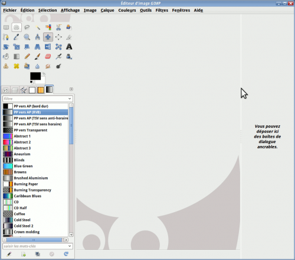Normalement, c’est une flèche double qui s’affiche, mais Shutter (tout comme l’utilitaire que j’avais sous Gnome) ne capture que la flèche normale.
Mais si vous voulez faire ça, au lieu d’ajouter les onglets avec la méthode de la petite flèche pour ensuite détacher ce qu’il y a de trop, déplacez tout bonnement les onglets de la partie droite que vous voulez vers la partie de gauche ! Comme ça, vous n’aurez à détacher que ce que vous ne voulez pas !
Dans tous les cas, vous pouvez toujours retourner à la configuration des fenêtres telles qu’elles étaient au premier lancement, en allant dans les préférences de GIMP, dont je vais justement faire un survol ci-dessous.
Modifier ses préférences
Vous pouvez également personnaliser l’interface en modifiant les préférences.
Pour les modifier, allez dans Édition > Préférences. Une fenêtre s’affiche, avec plusieurs rubriques où vous pouvez modifier les configurations.
Je vous liste les plus intéressantes pour l’interface.
Changer la langue de l’interface
Auparavant, changer la langue de l’interface de GIMP n’était pas à la portée des novices, pour qui la ligne de commande, faire un fichier .bat et ajouter des variables d’environnement font souvent peur. (Voir comment on faisait avec la version 2.6)
Or, la 2.8 a résolu ce problème en ajoutant une option dans les préférences pour permettre de changer la langue facilement et simplement, sans toucher au terminal, ni avoir à faire du bidouillage pas très à la portée du novice ! Pour cela, dans vos préférences, allez dans la rubrique Interface puis vous avez le menu déroulant Langue. Normalement, il est réglé sur « Langue système », mais si vous voulez sélectionner une autre langue, par exemple pour suivre un tutoriel rédigé en anglais, vous choisissez tout simplement la langue à utiliser (ex: en_CA pour moi). Une fois le choix validé, vous devrez relancer GIMP pour que ça s’affiche sous la nouvelle langue choisie.
Et voilà, mon GIMP est maintenant dans la langue de Shakespeare !
Icônes d’outils plus petits
Très pratique pour les résolutions minimales et les écrans à largeur standard. Allez dans la rubrique Thème, puis choisissez le thème Small. Vous aurez alors des icônes plus petits, comme ceci :
Mémoriser les options des outils
Certains préféreront garder leurs options d’outils à travers leurs sessions de gimpage. Allez dans la rubrique Options des outils, puis cochez Enregistrer à la sortie les options des outils. Ceci va faire en sorte que lorsque vous fermez GIMP, les options de vos outils seront mémorisées pour la prochaine ouverture.
Ajouter les icônes « Brosses, Dégradés et Motifs » à côté des couleurs
Ceci était affiché par défaut dans la version 2.2.x (du moins, dans ma version Windows que j’avais il y a longtemps), mais ne l’est plus depuis la 2.4.x. Pour ceux qui veulent l’afficher, allez dans la rubrique Boîte à outils et cochez Afficher les brosses, motifs et dégradés actifs. Un nouveau trio de raccourcis apparaîtra à côté de vos couleurs, comme ceci :
Vous pouvez aussi choisir d’afficher l’image active également, surtout si vous n'utilisez pas le mode fenêtre unique.
Réinitialiser la position des fenêtres
Si un moment donné, vous voulez réinitialiser les fenêtres telles qu’elles étaient au premier lancement de GIMP, allez dans la rubrique Gestion des fenêtres et cliquez sur Restaurer les positions enregistrées aux valeurs par défaut. La réinitialisation se fera au prochain démarrage de GIMP.
Utiliser les raccourcis-clavier dynamiques
GIMP est configuré avec des raccourcis clavier par défaut, mais toutes les fonctions n’ont pas un raccourci-clavier assigné. Cette option est utile pour pouvoir en ajouter aux fonctions qui n’en ont pas, ou même pour modifier les raccourcis pour les rendre utilisables avec la disposition BÉPO. Pour cela, vous devez l’activer en allant dans la rubrique Interface puis en cochant Utiliser les raccourcis clavier s’il n’est pas coché.
Ensuite, toujours dans la même fenêtre des préférences, vous cliquez sur Configurer les raccourcis-clavier, qui vous ouvrira une fenêtre vous listant les fonctions avec les raccourcis.
Vous sélectionnez la fonction à laquelle vous voulez assigner un raccourci-clavier. Dans mon exemple, je vais prendre Agrandir, une fonction située dans le menu Sélection.
Vous aurez alors à faire la combinaison désirée. Dans mon exemple, je vais assigner Ctrl++ à la fonction Agrandir.
Ainsi, lorsque vous allez dans le menu où se trouve la fonction (dans notre cas : Sélection > Agrandir), on voit bien notre raccourci !
Vous pouvez donc configurer tout ça à votre goût. :)
Par la suite, si vous voulez réinitialiser les raccourcis-clavier, retournez dans vos préférences (mettez en pratique le nouveau raccourci clavier, juste pour essayer), dans la rubrique Interface puis cliquez sur le gros bouton Rétablir les raccourcis-clavier aux valeurs par défaut puis validez. Cette réinitialisation se fera au prochain démarrage de GIMP.
Je n’ai cité que quelques unes des options, pour vous montrer les possibilités de personnalisation, mais n’hésitez pas à explorer les préférences pour personnaliser GIMP à votre goût.
L’exploration de l’interface de travail est terminée, mais on n’a pas fini avec l'apprivoisement de Gimp, puisque l’interface de création et d’enregistrement de nouveaux documents est assez particulière également, donc tant qu’à partir du bon pied pour la suite du tuto … :)
Pour continuer dans la familiarisation de l’interface, allons voir maintenant les fonctions de création, d’ouverture et d’enregistrement de nouveaux documents.
Création d’un document
Pour la création d’une nouvelle image, c’est assez facile à deviner qu’on doit passer par Fichier > Nouvelle image (Ctrl+N). Faisons-le.
Vous verrez apparaître cette fenêtre :
Vous pouvez choisir soit un modèle prédéfini avec le menu déroulant (1), soit un format personnalisé avec les petites flèches (2).
Mais avant de confirmer, cliquons sur Options avancées(3) pour voir les options qu’on a :
Vous voyez donc d’autres options pour votre nouveau document, je vais les détailler.
(4) C’est la résolution en points par pouce que vous voulez donner à votre nouveau document. Ceci n'est utile que si votre document est destiné à être imprimé sur papier. Plus la résolution est élevée, meilleure sera la qualité d’impression, mais il vous faudra faire une image plus grande pour éviter de se retrouver avec un timbre-poste sur papier. :lol:
(5) L’espace de couleurs. Il s’agit du mode colorimétrique que vous voulez donner à l’image. Dans 98% des cas, on sera amené à faire une image en couleurs plutôt qu’en noir et blanc, donc « Couleur RVB », qui est par défaut, vous sera le plus utile.
(6) Dans cette option, c’est là que vous déterminez si vous remplissez le fond de votre nouveau document avec une couleur ou si vous voulez le fond transparent. Vous avez donc le choix entre la couleur de premier-plan (noir par défaut), la couleur d’arrière-plan (blanc par défaut), blanc ou transparent. Ces quatre options sont autant utiles les unes que les autres, puisque le choix du remplissage dépend de votre type d’image.
Notez que si vous commencez avec un fond transparent, le calque, c'est-à-dire une couche de votre image - vous n’avez qu’à imaginer plusieurs feuilles de cellophane superposées - aura d’office un canal alpha, ce qui permet justement la transparence, contrairement aux trois autres options, qui donneront un calque sans canal alpha, ce qui fait que si vous effacez des parties sur ce calque, ce sera remplacé par la couleur d’arrière-plan, et il vous faudra donc ajouter vous-même le canal alpha, chose qui sera vue plus tard dans le cours. Cette option est donc importante pour tous vos projets.
(7) C’est le commentaire que vous voulez donner à votre image. Avec cette option, vous décidez de ce que vous voulez afficher dans les propriétés de l’image finale (par défaut « Created with GIMP »).
Une fois vos options réglées, vous pouvez valider la création du nouveau document.
Ouvrir un document
Maintenant, si vous voulez ouvrir une image existante, là aussi le raccourci vous sera déjà familier : Fichier > Ouvrir (Ctrl+O).
Une fenêtre s’ouvre :
À partir de là, vous parcourez vos dossiers et fichiers pour trouver l’image que vous voulez ouvrir. Les boutons tout en haut (1) vous permettent de naviguer dans l’arborescence de vos fichiers et de revenir directement plusieurs dossiers en arrière. Le menu de gauche (2) vous donne les principaux emplacements sur votre machine. Au centre (3), se trouve la partie principale de la navigation, avec le contenu de votre dossier courant. À droite (4), vous pouvez avoir un aperçu direct d’une image que vous sélectionnez (attention : cela peut prendre plusieurs secondes pour générer la miniature d’une image très volumineuse). Vous avez aussi un menu déroulant, en bas (5), qui vous permet de ne sélectionner qu’un type d’image précis, comme les PNG ou les JPEG par exemple.
Une fois que vous avez choisi votre fichier, validez votre choix avec le bouton Ouvrir.
Notez aussi que vous pouvez aussi ouvrir une image en glissant-déposant les fichiers depuis votre explorateur de fichiers vers la fenêtre centrale de GIMP.
Enregistrer un document
Depuis la version 2.8, cette fonction a été scindée en deux pour plus de clarté.
Maintenant que vous savez en gros ce que vous devez faire, je ne vous présenterai pas en détails chacune des fonctions, puisque l’interface est sensiblement la même, la seule différence étant dans les choix de formats.
Que vous utilisiez Enregistrer ou Exporter, voici ce que vous avez :
Vous commencez par taper le nom que vous voulez donner à votre fichier (1), en vous assurant de garder la bonne extension à la fin pour que GIMP l’enregistre sous le format désiré. Ensuite, vous parcourez dans vos dossiers pour choisir l’emplacement dans lequel vous voulez enregistrer votre fichier (2), dont vous pouvez changer les fichiers à afficher à partir du menu déroulant (3). Et finalement, dans le cas de l’exportation, vous avez un menu rétractable où vous avez les choix de formats (4)
On valide donc, puis juste pour vous montrer, je vais ouvrir mon explorateur de fichiers pour y retrouver mes fichiers .XCF et .PNG que je viens d’enregistrer dans mon dossier « bigtuto-gimp-2.8 » :
Mes nouveaux fichiers que je viens d’enregistrer s’y trouvent (je les ai entourés de rouge) !
Petite note en passant …
Puisque j’ai parlé d’exportation, je viens juste souligner que lorsque vous ouvrez une image dans un format autre que .XCF, vous aurez une mention « Importée » vis-à-vis le nom du fichier, dans la barre du titre.
Aussi, lorsque vous exportez une image vers un format autre que .XCF, une mention « Exportée » apparaîtra vis-à-vis le nom du fichier tant que vous n’aurez pas fait de modifications ultérieures.
Maintenant, vous ne devriez plus avoir de problèmes à créer vos nouveaux documents et à les enregistrer. :)
Le tour d’horizon de l’interface est maintenant fait et vous savez maintenant personnaliser GIMP. On est maintenant prêt à attaquer les fonctionnalités du logiciel !
Pour débuter en douceur, on va commencer par des opérations simples qui sont généralement les premières choses qu’un débutant apprend en manipulation d’images et qui vous seront particulièrement utiles si vous devez travailler des photos numériques.
Avant de commencer à manipuler des images, on doit commencer par apprendre quelques fonctions qui sont essentielles à connaître quelle que soit l’utilisation qu’on veut faire de GIMP. Ce sont les bases que tout débutant doit connaître.
Je commence donc avec la présentation de ces fonctions.
Annuler
Vous vous êtes planté lors d’une manipulation ? Le résultat ne vous satisfait pas ?
La fonction Annuler vous permet de corriger toutes les petites bévues que vous pourriez faire pendant vos sessions de gimpage !
Cette fonction est disponible depuis Édition > Annuler, mais vous pouvez aussi utiliser le raccourci Ctrl+Z.
Mais si j'ai fait beaucoup d’opérations après l’action que je dois annuler, est-ce que je peux me reprendre ?
GIMP dispose d’une historique d’annulation qui peut contenir autant d’actions que la mémoire allouée - qui est de 64 Mo par défaut - lui permet, ce qui signifie que vous disposez d’une grande marge de manœuvre ! Ceci peut être réglé dans Édition > Préférences > Environnement > Mémoire maximale pour l’annulation.
Rétablir
Ceci est littéralement l’inverse de la fonction Annuler. Si vous avez trop annulé d’actions, vous pouvez refaire ces actions précédemment annulées en passant par Édition > Rétablir ou en utilisant Ctrl+Y.
Passer d’un mode colorimétrique à l’autre
Puisque les images peuvent avoir différents modes selon leur format, vous serez amené à faire des conversions, en particulier si vous voulez travailler sur une image en GIF qui est toujours en couleurs indexées (palette de 256 couleurs maxi), qui ne permet pas d’utiliser la plupart des fonctions, ni de peindre avec des couleurs absentes de la palette, ce qui veut dire que si vous essayez de peindre en rouge sur un GIF qui ne contient que du bleu et du noir, vous peindrez en noir au lieu du rouge.
Dans ce cas de figure, vous pouvez passer au mode RVB (16 millions de couleurs) en passant par Image > Mode puis sélectionner RVB.
Vous avez aussi deux autres choix : Couleurs indexées (le mode utilisé par les GIFs et les PNG8) et Niveaux de gris.
Vous serez souvent amené à zoomer votre image pour faire du travail de précision ou pour l’afficher à sa vraie grandeur (dans le cas d’une grande image). Vous pouvez le régler depuis le menu dans le bas de la fenêtre centrale lorsqu’une image est ouverte.
Vous pouvez aussi choisir d’autres pourcentages de zoom en faisant Affichage > Zoom où vous trouverez pleins d’options.
…ou bien, pour aller plus vite, vous n’avez qu’à faire Ctrl+molette en ayant le curseur sur le viewport (zone de la fenêtre affichant l’image) de votre fenêtre pour zoomer votre image !
Se déplacer dans la fenêtre d’image
Vous aurez forcément besoin de vous déplacer dans la fenêtre d’image lorsque vous zoomez. Pour cela, tout le monde sait qu’on peut utiliser les ascenseurs horizontal et vertical pour se déplacer.
Mais saviez-vous qu’il existe une façon encore plus simple ? En ayant votre curseur dans le viewport de votre fenêtre, vous n’avez qu’à utiliser votre molette pour vous déplacer verticalement. Et si votre curseur est placé sur l’ascenseur horizontal, le déplacement avec la molette sera horizontal !
Ajuster la fenêtre à l’image
Si vous êtes en mode multi-fenêtres et que vous ouvrez une très grande image que vous réduisez ou recadrez ensuite, vous vous retrouverez assurément avec une graaaaaande fenêtre avec une toute petite image au centre. :p
Au lieu d’essayer de redimensionner votre fenêtre à coups de cliquer-glisser, il existe une fonction qui vous permet d’ajuster la fenêtre à l’image et celle-ci se trouve dans Affichage > Ajuster la fenêtre à l’image ou en utilisant la combinaison Ctrl+E !
Voilà, vous connaissez maintenant les fonctions de base essentielles à tout gimpeur ! Maintenant, passons à notre première manipulation d’image !
Ceci est généralement la première chose qu’on apprend à faire en manipulation d’image. En effet, plusieurs d’entre vous avez sûrement déjà dû faire ces manipulations pour pouvoir mettre un avatar dans votre profil sur ce site. Mais malgré que vous ayez déjà fait de telles manipulations, même avec Paint, je viens quand même parler du redimensionnement d’une image, que ce soit au niveau du rétrécissement/agrandissement, ou bien du recadrage de l’image, puisque chaque logiciel fonctionne différemment.
Pour vous le montrer, on va faire l’exercice de travailler une photo pour en faire un avatar pour le SDZ. Pour cela, je vais prendre cette photo de chat dont j’aime bien la bouille qu’il fait et qui est sous licence Creative Commons BY.
Vous choisissez donc la taille moyenne 500 puis vous enregistrez l’image sur votre ordinateur. Ouvrez-la ensuite avec GIMP.
Recadrer la photo
Puisque notre photo n’est pas carrée, on va commencer par enlever les parties qui ne nous intéressent pas, de façon à obtenir un carré parfait. ;) Pour cela, je vais vous montrer deux façons de faire.
Avec l’outil de recadrage
Disponible dans la boîte à outils sous cet icône
, cet outil permet de faire un recadrage rapide en encadrant la partie à garder. Ceci n’est pas très exigeant en ressources et donc, je l’utilise pour faire un premier recadrage grossier. C'est donc avec cet outil qu’on va commencer.
Prenez l’outil de recadrage
dans votre boîte à outils, puis sur votre image, cliquez en haut à gauche de la tête du chat, puis en maintenant le bouton gauche enfoncé, glissez jusqu’en bas à droite de la tête avant de relâcher.
Ce n’est pas tout à fait carré, mais vous pouvez ajuster l’encadrement en utilisant les poignées qui apparaissent lorsque vous approchez votre curseur du bord.
Cliquez puis glissez en ayant le bouton enfoncé, vous verrez que le cadre change de dimensions ! Ajustez donc les bords pour obtenir un carré parfait, en vous aidant des dimensions indiquées vis-à-vis Taille dans les options des outils.
Une fois que le résultat vous satisfait, cliquez à l’intérieur du rectangle. L’image sera alors coupée en suivant ce cadre, pour obtenir ce résultat :
On vient de recadrer l'image avec l'outil de découpage, mais on aurait pu aussi bien le faire avec la seconde méthode que je vous montre ci-dessous.
Taille du canevas
Cette méthode est assez gourmande en ressources, surtout si vous avez une très grande image et que vous en avez beaucoup à enlever. Ceci m’a d’ailleurs déjà valu des déconnexions soudaines de ma session Ubuntu quand je ne faisais pas gaffe. Je ne sais pas pourquoi, mais ça faisait ça. :o C’est donc pour cette raison que je l’utilise surtout en finition ou sur des images pas trop grandes.
Maintenant, on va annuler le recadrage qu'on vient de faire, pour la refaire avec la méthode de la taille du canevas. Pour cela, allez dans Image > Taille du canevas.
Vous devriez avoir une fenêtre qui ressemble à ceci :
À côté des deux premiers sélecteurs, vous pouvez voir une petite chaîne attachée (
). Cette petite chaîne, quand elle est attachée, permet de faire du recadrage proportionnel. Essayez pour voir, en abaissant l’une des deux valeurs.
L’un suit l’autre !
Maintenant, revenons à nos valeurs initiales en cliquant sur le bouton Réinitialiser en bas de la fenêtre. Vous revoilà avec les dimensions initiales.
Maintenant, si on veut baisser l’une des deux valeurs sans que l’autre ne suive, il faut détacher la petite chaîne, en cliquant dessus.
Abaissez la plus grande des deux valeurs, pour qu’elle rejoigne l’autre pour faire un carré parfait.
L’autre valeur n’a pas suivi !
Mais si je veux rogner à gauche ou en haut, qu’est-ce que je fais ?
On en vient justement à ce sujet. Si vous regardez votre fenêtre, vous verrez deux autres sélecteurs plus bas :
Ces sélecteurs permettent de positionner le rectangle de ce que vous voulez garder. Essayez de jouer avec ces sélecteurs pour le positionner.
Revenons maintenant au recadrage de notre minou. Il ne vous reste qu'à rogner l'image à votre goût, tout en gardant le carré parfait, puis ajuster le décalage du rectangle.
Il ne vous reste plus qu'à valider.
Mais… les pointillés n’ont pas suivi !
En fait, c’est tout à fait normal. À la base, une image est toujours composée d’au moins un calque, et ce calque est indépendant du canevas ou « espace de travail visible ». Pendant que par défaut, l’outil de recadrage agit à la fois sur le calque et le canevas, la fonction Taille du canevas n’agit par défaut… que sur le canevas ! Donc si vous tenez à ce que les pointillés suivent, vous devez utiliser le menu déroulant Redimensionner les calques juste au dessus des boutons avant de valider le recadrage.
Annulez donc votre recadrage Ctrl+Z que vous venez de faire, puis refaites-le en sélectionnant Tous les calques dans le menu déroulant avant de valider.
Wô wô wô, stop ! C'est quoi ça les calques ?
Si je vous dis d’imaginer plusieurs feuilles transparentes, avec chacun un élément imprimé dessus, et qu’une fois ces feuilles empilées les unes sur les autres, forment un « tout » qui est projeté sur le mur du local de classe, cela vous donne une idée ? Si oui, ceci devrait vous donner une idée des possibilités de cette fonctionnalité très puissante. Mais nous ne verrons ça que dans quelques chapitres puisqu’en ce moment, vous débutez à peine dans l’utilisation des fonctionnalités de Gimp et je préfère que vous ayez appris quelques notions de base avant d’attaquer ce morceau.
Bon, revenons à notre Ti-Mine !
Là encore, il est beaucoup trop grand pour les dimensions maximales demandées sur le SDZ. Pour cela, lisez ce qui suit.
Réduire / Agrandir une image
Notre minou fait encore 250*250 pixels et on doit le réduire à 100*100 pixels pour qu’on puisse le mettre en avatar.
Allez donc dans Image > Échelle et taille de l’image. Une nouvelle fenêtre s’ouvrira :
Le principe est encore le même : Si la chaîne est attachée, le redimensionnement sera proportionnel. Si la chaîne est détachée, vous pouvez étirer/rétrécir d’un seul côté au lieu des deux.
Tout en gardant la chaîne attachée, réduisez l’une des deux valeurs à 100 (l’autre suivra) pour avoir la taille désirée :
Quant aux sélecteurs de Résolution, n'y tenez pas compte, à moins que votre image soit destinée à l'impression.
Mais avant de valider, examinons un peu le menu déroulant « Interpolation » que vous voyez sous les sélecteurs :
C’est quoi ce mot barbare ?
En gros, lorsque vous agrandissez ou réduisez les dimensions d’une image, vous avez inévitablement une perte de qualité. Pour minimiser cette perte, les pixels de la nouvelle image doivent être recalculés et pour cela, GIMP dispose de plusieurs options, qui utilisent chacune un algorithme différent, et une dernière option qui n’utilise aucun algorithme.
Vous pouvez tester les quatre options disponibles sur l’image du minou, en annulant entre chaque action.
Dans l’ordre : Aucune, Linéaire, Cubique, Sinc (Lanczos3)
La différence est plus frappante sur la première des quatre images qui est plus pixelisée que les autres.
Pour revenir à la réduction des dimensions de notre minou, laissez l’option d’interpolation sur Cubique.
Voilà notre chat, prêt à être mis en avatar !
Vous pouvez faire la même chose avec n’importe quelle photo de votre choix !
Bien que ce que je vais vous montrer seront davantage utiles pour le post-traitement des photos, ces fonctions ne sont pas à négliger pour autant puisque vous pourriez en avoir besoin en photomontage ou en création de webdesign. D’ailleurs, j’ai régulièrement besoin de certaines de ces fonctions pour la création de mes styles phpBB3 où je reprends bien souvent quelques mini-icônes du style par défaut que je modifie pour les besoins du nouveau style.
Allons y maintenant dans la présentation des fonctions !
Luminosité / Contraste
Cette fonction est pratique pour éclaircir une photo trop sombre ou pour donner un joli effet artistique à une photo.
Prenons cette photo comme exemple : Télécharger l’image (licence CC-BY) Prenez la taille petite, cela suffira.
Ouvrez l’image et allez dans Couleurs > Luminosité-Contraste.
Jouons d’abord avec la luminosité, en annulant entre chaque modification.
Dans l’ordre : luminosité à 50, luminosité à -50
Puis avec le contraste (avec la luminosité à 0).
Dans l’ordre : Contraste à 50, contraste à -50
En combinant ces deux paramètres, vous pouvez à la fois éclaircir une photo et forcer le contraste.
Un exemple :
Luminosité à 50, contraste à 50 pour le premier. Luminosité à 90, contraste à -30 pour le deuxième.
Teinte-Saturation
Très pratique pour changer la teinte d’un élément ou pour désaturer une couleur trop vive ou pour raviver une couleur trop fade.
Faisons un premier exercice en changeant la teinte d’un élément. Pour cela, nous allons travailler sur l’image suivante qui est celle d’une ancienne boîte aux lettres : Télécharger l'image (Licence CC-BY) Prenez la taille moyenne, cela suffira.
Ouvrez-la avec Gimp.
Notre boîte aux lettres antique est présentement rouge. Nous allons changer sa teinte pour la rendre bleue.
Pour cela, allez dans Couleurs > Teinte-Saturation. Une fenêtre comme celle-ci devrait apparaître :
Si vous ne cochez rien, toutes les teintes changeront lorsque vous voudrez déplacer le curseur du paramètre Teinte. Pour ne changer qu’une seule teinte, vous devrez cocher celle qui se rapproche le plus. Dans notre cas, on va cocher la teinte rouge puisque ce que nous voulons changer est rouge.
Déplacer le curseur de Teinte, pour constater que la boîte aux lettres passe par toutes les teintes. Arrêtez-le quand la boîte sera devenue bleue.
Vous pouvez aussi jouer avec la luminosité et la saturation si vous voulez la boîte aux lettres plus (ou moins) saturée ou plus claire.
Voici quelques exemples de réglages.
En variant la luminosité (à gauche) et en variant la saturation (à droite)
Vous pouvez ainsi donner des effets sympas, comme par exemple une photo presque désaturée où l’on voit à peine de la couleur, comme dans cet exemple :
Niveaux
Cette fonction est pratique pour éclaircir une photo trop sombre ayant un éclat de lumière trop fort.
Pour vous en faire la démonstration, exerçons-nous maintenant avec une de mes propres photos : Télécharger l'image.
Vous voyez qu’on a un grand éclat de lumière là où le soleil frappe le plancher, pendant que tout le reste est très sombre et on voit donc mal les alentours et les deux chats.
Nous allons donc corriger ça en jouant avec les niveaux. Pour cela, ouvrez l’image avec Gimp.
Pour y accéder, allez dans Couleurs > Niveaux. Une fenêtre comme celle-ci apparaîtra.
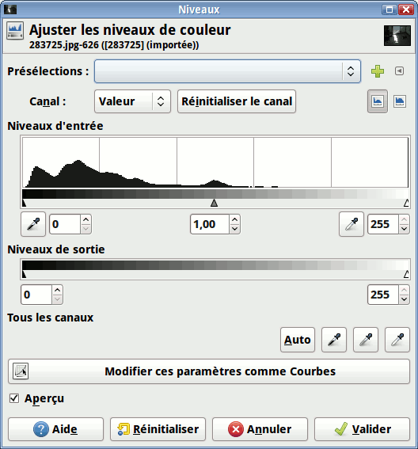
En haut, là où vous avez Niveaux d’entrée, vous avez une représentation graphique de la répartitions des pixels de la photo sur une droite allant du noir au blanc. On remarque dans ce cas-ci qu’il y en a beaucoup dans les foncés.
Mais avant, un petit peu d’explications sur le principe des curseurs noirs, gris et blancs :
Ainsi, pour faire une petite démonstration de ce que je vous ai expliqué, voici différents exemples avec différents paramétrages, en commençant par montrer l’image non modifiée.
De gauche à droite : Non-modifié, curseur noir vers la droite, curseur blanc vers la gauche, curseur gris vers la droite, curseur gris vers la gauche.
Donc, pour revenir à ce qu'on veut faire, c’est-à-dire éclaircir notre photo, on doit donc mettre notre curseur des gris plus à gauche, là où commence la « montagne » :
Pour donner ceci comme résultat :
On voit vraiment mieux les chats sur le plancher, rrrwaou ! ;)
Ensuite, vous pouvez régler les niveaux de sorties pour peaufiner le travail. Dans ce cas-ci, le principe est plus simple : Plus le curseur blanc est à gauche, plus les tons clairs seront assombris. Plus le curseur noir sera à droite, plus les tons foncés seront clairs.
Allons-y donc avec un peu de pratique.
De gauche à droite : Non-modifié, curseur noir vers la droite, curseur blanc vers la gauche.
Puisqu’on parle des noirs et des blancs, je vais vous parler d’une autre fonction, plus complexe, qui permet également de balancer les tons clairs et sombres.
Courbes
Cette fois-ci, au lieu de jouer avec les curseurs sur une droite, on a affaire à un graphique avec une courbe qu’on peut manipuler pour régler plus finement les tons.
Pour la démonstration, reprenez la même photo avec les deux chats, non modifiée.
Cette fois-ci, allez dans Couleurs > Courbes. Une fenêtre comme celle-ci apparaîtra.
Comme dans les niveaux, vous voyez la répartition des pixels entre le noir et le blanc, sauf que cette fois-ci, on ne règle non pas sur une droite, mais sur un plan en deux dimensions.
Initialement, vous avez une courbe droite qui monte de façon régulière. Vous pouvez la courber en déplaçant les deux extrémités et en ajoutant de nouvelles ancres que vous déplacez ensuite.
Commençons par un premier courbage, en cliquant au milieu de la droite et en glissant l’ancre ainsi formée vers la gauche, dans le but d’éclaircir nos tons sombres.
C’est déjà mieux, mais nos tons clairs sont encore un petit peu trop clairs. Abaissez un peu l’ancre qui se trouve complètement dans le coin en haut à droite, vers la première ligne de la grille.
Déjà, notre éclat de lumière frappe un peu moins. :)
Vous pouvez ajouter autant d’ancres que vous voulez, et même baisser certaines ancres plus bas que leurs voisines de gauche, comme ici :
Ceci est vachement utile pour certains cas bien particuliers, comme la création d’une carte pour vos jeux de rôles que vous commencez à partir d’un brouillage uni, pour délimiter vos continents :
Ça ressemble à des continents entourés d’eau dans la deuxième image, vous ne trouvez pas ? :p
Cela vous donne donc une idée des possibilités de cet outil de retouche. ;)
Pour en revenir à notre photo, vous n’avez qu’à valider si le résultat vous satisfait, ou réinitialiser si vous voulez recommencer.
On finit ce chapitre par l’utilisation d’un ensemble d’outils qui vous permettront, à la base, de corriger certains problèmes d’inclinaison ou autre dans vos photos, mais qui une fois que vous saurez manipuler les calques, vous permettront de faire des manipulations sympas dans vos montages ou même en design.
Présentation des outils
Ces outils sont au nombre de 6 au total et nous les verrons tous. Les voici, entourés.
Pour l’exercice, on va s’amuser à manipuler un calque de texte, ce qui rejoindra certainement beaucoup d’entre vous. Pour cela, téléchargez le fichier XCF et ouvrez-le sous GIMP.
Normalement, vous n’avez pas besoin de sélectionner le calque du texte. Sinon, faites Ctrl+L et sélectionnez le calque le plus haut.
Notez qu’entre chaque exercice, vous devez repartir du texte non modifié, donc lorsque vous voyez un nouvel outil, annulez l’action précédente.
Rotation
Cet outil permet de faire pivoter une image ou un calque dans toutes les directions que l’on veut.
Pour l’utiliser, cliquez sur le calque à pivoter (le texte dans notre cas). Une fenêtre comme celle-ci apparaîtra :
Vous pouvez soit régler les paramètres via cette fenêtre pour un travail précis, ou utiliser le cliquer-glisser pour faire tourner le texte. Et si vous voulez des angles droits ou des angles de 15°, tenez la touche Ctrl enfoncée pendant que vous faites votre cliquer-glisser.
Lorsque vous êtes prêt, cliquez sur le bouton Rotation ou appuyez simplement sur Enter.
Et voilà, un joli texte en biais !
Mise à l’échelle
Cet outil permet de redimensionner un calque dans une image. Cela ressemble beaucoup à Échelle et taille de l’image, mais en bien plus rapide.
Pour l’utiliser, cliquez sur le texte non modifié. Une fenêtre apparaîtra :
Tout comme avec Rotation, vous pouvez soit régler les nouvelles dimensions depuis la fenêtre, soit en utilisant les poignées à coups de cliquer-glisser. Pour un redimensionnement proportionnel, enfoncez la touche Ctrl pendant que vous faites votre cliquer-glisser sur l’un des coins.
Vous pouvez ainsi l’étirer en hauteur par exemple.
Une fois que le résultat vous satisfait, cliquez sur Échelle ou faites Enter.
</lien> Voilà, on a un zouli texte étiré !
Cisaillement
Cet outil sert à incliner horizontalement ou verticalement une image ou un calque.
Pour l’utiliser, cliquez sur le texte non modifié. Une fenêtre apparaîtra.
Tout comme avec les deux outils précédents, vous pouvez soit régler depuis la fenêtre, soit régler à coups de cliquer-glisser. Cette fois-ci, vous ne pouvez QUE soit incliner horizontalement OU soit incliner verticalement. Vous ne pouvez pas faire les deux en même temps.
Une fois que le résultat est satisfait, cliquez sur Cisailler ou faites Enter.
Ça donne des idées pour des affiches, non ?
Perspective
Cet outil sert à changer la perspective d’un calque en déplaçant les poignées de ses quatre coins.
Pour l’utiliser, cliquez sur le texte non-modifié. Des poignées apparaîtront aux quatre coins de votre calque.
Vous pouvez déplacer ces poignées indépendamment les unes des autres. Mais pour l’exercice, amusez-vous à reproduire le style « Back to the future » comme le titre des récap' communautaires, en étirant le coin supérieur droit comme ceci :
Une fois que le résultat vous satisfait, vous cliquez sur Transformer ou vous faites Enter.
Il me semble qu'il manque quelque chose…
Il ne restera plus qu'à compléter avec un deuxième texte, en dessous !
Ça donne déjà un exemple de ce qu'on est capable de faire comme style de titre avec l'outil. :)
Retourner
C’est l’outil le plus simple à utiliser puisqu’il ne fait que retourner une image, horizontalement ou verticalement.
Pour l’utiliser, cliquez simplement sur votre texte non-modifié.
Le voilà à l’envers !
Par contre, si vous voulez plutôt un retournement vertical, enfoncez la touche Ctrl puis cliquez sur votre texte.
Et voilà votre texte retourné verticalement après l’avoir été horizontalement !
Transformation par cage
Fraîchement arrivé dans la version 2.8, ce nouvel outil développé dans le cadre du Google Summer of Code 2010, permet de déformer un élément d’une image à l’aide d’un polygone dont on déplace ses ancres.
Puisque cet outil ne redimensionne pas le calque transformé, commencez par faire Calque > Calque aux dimensions de l’image
Prenez maintenant votre outil, puis encadrez votre texte, en faisant votre dernier clic sur le premier ancre pour fermer le polygone.
À partir de là, vous pouvez déplacer les ancres pour déformer le texte. Déplaçons-en un (attention : sollicite le processeur).
On peut voir que la forme originale apparaît en dessous. Pour éviter qu’elle ne s’affiche dans le travail final, il vous faut cocher Remplir la position initiale de la cage avec une couleur unie dans les options de l’outil :
La couleur utilisée sera celle d’arrière-plan.
Continuez à vous amuser avec les ancres. Par exemple dans mon cas, voici ce que j’ai fait.
Une fois que vous avez terminé, appuyez sur la touche Enter.
Et voilà !
Le survol est maintenant fait, mais ces outils, surtout les quatre premiers, ont des options qui leur sont communes.
Options communes aux outils
Survolons maintenant les options qui sont communes aux outils.
Transformer / Affecter
Lorsque vous serez rendus suffisamment loin pour manipuler les calques, les sélections et les chemins, vos élans créatifs vous amèneront parfois à avoir besoin de transformer une sélection ou un chemin au lieu d’un calque. Ce tutoriel sur la création d’un icône « Connecté » pour phpBB3, ou encore celui sur la création d’un bouton Prosilver sont des exemples de l’utilisation de cette option, puisque dans le premier cas, j’ai fait mon texte à partir d’un chemin que j’ai pivoté, et dans le deuxième cas, j’ai retourné la sélection du contour du bouton du haut pour faire celui du bouton du bas. Notez que les deux tutoriels en question sont d’un niveau plus avancé, donc je ne les ai cités qu’à titre informatif et je vous recommande d’attendre d’être rendus plus loin dans le cours avant de tenter de suivre ces deux tutoriels si vous voulez les faire.
Type d’interpolation
Je vous en avais parlé lors de la sous-partie où l’on redimensionnait une photo de chat pour en faire un avatar. Puisque les quatre premiers outils de transformation affectent la qualité de l’image, cette option permet de régler la façon dont Gimp va recalculer chaque pixel de l’image transformée pour réduire la pixelisation.
Rognage
Puisque les quatre premiers outils de transformation changent la position des coins du calque, vous avez le choix du réglage pour que soit l’image soit agrandie en fonction du changement, ou que soit tout ce qui dépasse soit rognée.
Aperçu
Par défaut, une grille comme celle que vous avez pu voir dans les captures plus haut s’affiche. Avec ces options, vous pouvez choisir d’afficher ou non cette grille, ainsi que le nombre de lignes dans la grille (15 par défaut). Vous pouvez aussi choisir d’afficher l’image d’aperçu ou non, ainsi que son opacité. C’est à vous de décider du type d’aperçu dont vous vous sentez le plus à l’aise. ;)
Il ne vous reste plus qu’à expérimenter tout ça !
Avec ce petit échauffement, vous êtes fin prêts pour commencer à aller jouer au parc peindre sur votre image et ainsi, à faire vos premiers pas dans la création pure.
Que serait le graphisme ou le dessin numérique sans notions de traçage, de peinture ou de remplissage ? En effet, il faut bien qu’on commence quelque part si on veut réaliser des peintures numériques ou un webdesign. Et pour faire un parallèle, seriez-vous capable de dessiner sur une feuille de papier sans matériel comme des crayons, des feutres ou de la peinture ? Sûrement que non.
Donc dans ce chapitre, on va bouetter (jouer dans la boue) en masse en découvrant les possibilités des outils de peinture et de remplissage. Mais au moins, contrairement à de la vraie peinture, il n’y a aucun risque que vous tachiez votre T-shirt favori !
Avant de commencer à peindre, tracer ou remplir, on doit d’abord faire un survol du sélecteur de couleurs afin de savoir l’utiliser.
Choisir une couleur
Comme vous l’avez certainement remarqué, le choix des couleurs se passe par la boîte à outils :
Je vous décris les parties.
Le grand carré noir
Le grand carré noir que vous voyez est la couleur de premier plan. C’est elle qui sera utilisée lorsque vous utilisez les outils de peinture (crayon, pinceau) et le pot de peinture. Il est noir par défaut.
Le grand carré blanc
Le grand carré blanc partiellement caché est la couleur d’arrière-plan. C’est cette couleur qui sera utilisée lorsque vous effacez des portions de l’image lorsque le calque n’a pas de canal alpha (dont je vous parlerai un peu plus tard) permettant la transparence et lorsque vous créez un nouveau document sans changer les paramètres avancés. Il est blanc par défaut.
Les petites flèches
Les petites flèches dans le coin en haut à droite vous permettent d’intervertir votre couleur de premier plan et celle d’arrière-plan. Cliquons dessus pour voir…
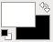
Vous avez maintenant le noir en arrière-plan et le blanc en premier plan !
Les deux mini-carrés
La petite icône représentant nos deux grands carrés vous permet de réinitialiser les couleurs de premier plan et d’arrière-plan aux couleurs par défaut, soit le noir en premier plan et le blanc en arrière-plan. Utile lorsque vous avez rapidement besoin d’utiliser du noir ou du blanc. Cliquons dessus pour le constater…
Mes couleurs sont maintenant comme elles étaient dans la première image !
Mais maintenant, si je veux d’autres couleurs que le blanc et le noir ?
C’est assez simple : vous cliquez sur le carré noir (couleur de premier plan) ou sur le carré blanc (couleur d’arrière-plan) et vous verrez cette fenêtre s’ouvrir :
Vous avez plusieurs façons de sélectionner une couleur.
(entouré de rouge) En déplaçant le curseur dans le sélecteur qui rappelle beaucoup ceux en Javascript que l’on retrouve sur certains sites et dont, si je me rappelle bien, il y a un tuto quelque part dans la catégorie Javascript ici… ah oui, tiens il est encore là : une palette de couleur.
(entouré de bleu) En modifiant les valeurs RVB (rouge-vert-bleu) ou TSV (teinte-saturation-valeur).
(entouré de gris) En utilisant la pipette pour sélectionner n’importe où sur votre écran, que ce soit une couleur de votre wallpaper ou celle de votre barre de tâches !
(entouré de vert clair) En entrant directement le code hexadécimal de la couleur, sans le dièse.
(entouré de noir) En sélectionnant une couleur que vous avez précédemment sélectionnée. Ceci est très pratique lorsque vous devez créer un webdesign ou un skin et que vous devez réutiliser une même couleur, puisque GIMP mémorise les 12 dernières couleurs que vous avez choisies, et lorsque vous sélectionnez l’une d'elle, celle-ci se remet tout simplement en premier.
Choisissons maintenant notre couleur. Par exemple, je vais prendre un bleu clair.
Vous voyez que les différents curseurs ont changé d’endroit et que le code hexadécimal est différent, et vous pouvez remarquer aussi qu’en bas à gauche, la première des deux barres de couleur a changé pour afficher la nouvelle couleur. :)
Validez votre choix.
Et voilà notre couleur prête à utiliser !
Choisir un motif
Vous pouvez aussi choisir un motif pour peindre ou remplir. Dans ce cas, si vous avez affiché le raccourci des brosses, dégradés et motifs dans vos préférences, comme je vous l’avais montré dans le deuxième chapitre, vous n’avez qu’à cliquer là où je vous l’indique en rouge dans la capture :
Dans le cas où vous ne l’avez pas activé et que vous n’avez pas ajouté la fenêtre des motifs parmi les onglets, ouvrez-la avec le raccourci Maj+Ctrl+P.
Vous verrez cette fenêtre s’ouvrir :
Choisissez un motif de votre choix. Pour ma part, j’ai pris Burlwood :
Dans l’icône de tantôt, vous voyez maintenant votre nouveau motif choisi :
On va maintenant s’exercer à remplir avec notre couleur ou notre texture, et là aussi, vous avez plusieurs façons de remplir avec votre couleur. Pour cela, un nouveau document de 600*300 suffira.
Avec le pot de peinture
Ceux qui débarquent directement de MS Paint ou Photofiltre sont déjà familiers avec cet outil. Il est accessible depuis la boîte à outils :
Maintenant, allons voir dans les options de cet outil, plus bas dans votre fenêtre :
En rouge, vous avez le choix entre remplir avec la couleur de premier plan, la couleur d’arrière-plan ou le motif. C’est cette option qui va le plus nous intéresser.
En bleu, vous pouvez aussi remplir avec une opacité plus faible ou un mode différent, mais j’en parlerai plus en détail lorsque j’aborderai les calques.
Il y a d’autres options pour l’outil que vous voyez plus bas, mais personnellement, je ne me souviens pas d’y avoir touché à celles-là.
Après, il ne vous suffit qu’à cliquer sur l’image - ou sur une zone sélectionnée de l’image - pour la remplir.
Par le menu Édition ou par raccourcis clavier
Depuis le menu Édition, vous trouverez les fonctions Remplir avec la couleur de PP, Remplir avec la couleur d’AP et Remplir avec un motif. Je suis davantage habituée à utiliser ces fonctions plutôt que le pot de peinture, puisque je n’ai pas à changer d’outil pour remplir.
Et pour ceux qui préfèrent utiliser les raccourcis clavier, ces trois fonctions ont chacune leur raccourci :
Ctrl+, : Remplir avec la couleur de premier plan ;
Ctrl+. : Remplir avec la couleur d’arrière-plan ;
Ctrl+; : Remplir avec un motif ;
C’est la méthode la plus rapide pour faire du remplissage puisque vous n’avez même pas à passer par la boîte à outils, ni par le menu Édition !
Quelle que soit la méthode utilisée (pot de peinture, menu Édition ou raccourcis clavier), on remplit donc notre image avec notre couleur ou notre motif :
Tous ceux qui ont moindrement manipulé un logiciel de dessin, même le très basique MS Paint ont probablement déjà manipulé des outils tels que le crayon et le pinceau. Puisque chaque logiciel a ses particularités au niveau des outils, nous allons faire un survol des outils de dessin de Gimp, ainsi que quelques options.
Sélectionner une brosse
Avant de faire un survol des outils, il faut que vous sachiez sélectionner une brosse pour les exercices qui suivront. Pour cela, si vous avez activé l’affichage du raccourci des brosses, dégradés et motifs, cliquez sur celui des brosses :
Ou sinon, faites Maj+Ctrl+B pour afficher la fenêtre des brosses (et profitez-en pour l’ajouter aux onglets ;) ).
Vous avez un choix prédéfini de brosses incluses par défaut dans GIMP, mais vous pouvez ajouter des brosses Gimp ou Photoshop téléchargées sur le Web ou créées par vos soins.
Prenez par exemple Circle Fuzzy (19), elle sera parfaite pour les exercices suivants.
Les outils de peinture
GIMP compte 13 outils de peinture, mais je n’en survolerai que huit puisque les autres outils seront abordés plus tard en temps et lieu.
Voici donc les outils qui seront survolés :
Pour la démonstration, créons une nouvelle image de 600*300 pixels sur fond blanc et gardons les couleurs par défaut (vous vous souvenez des mini-rectangles dont j’ai parlé plus haut ?).
Allons-y !
Outil crayon
Cet outil est très similaire au crayon et au pinceau de Paint, du fait que ça dessine des traits aux bords durs, mais la différence est dans les possibilités d’options de cet outil. Si une brosse avec des parties semi-transparentes sont utilisées, les pixels, même ceux qui sont presque totalement transparents, seront opaques.
Sur votre image, avec la brosse Circle Fuzzy (19), dessinez un point, puis quelques lignes.
On voit bien les escaliers sur les traits.
Cet outil est fort pratique lorsqu’on veut couvrir des surfaces avec une couleur unie et opaque, comme par exemple en colorisation pour faire le plus gros du travail, et en pixel-art, où des points opaques sont de mise.
Outil pinceau
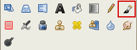
Contrairement au crayon, cet outil permet de tracer des lignes aux bords doux, telle qu’est la brosse. Si c'est semi-transparent, ça sera semi-transparent.
Avec la même brosse floue, faites un point et des lignes.
Là, c’est tout doux !
C’est l’outil par excellence pour la peinture numérique puisqu’elle permet d’avoir un résultat plus soignée en évitant les contours en escaliers.
Outil aérographe
Vous avez peut-être remarqué qu’avec l’outil pinceau, si vous cliquez et gardez la souris au même endroit, ça ne repeint pas tant que vous ne bougez pas la souris. Dans le cas de l’aérographe, ça continue à peindre à la même vitesse, que vous bougiez ou non votre souris, comme si vous peigniez des graffitis avec une canette de peinture. De cette façon, plus vous bougez vite, plus le tracé sera pâle.
Essayez, en faisant varier la vitesse de votre souris.
Si vous trouvez que ça peint trop pâle, vous pouvez régler le taux et la pression à des valeurs plus élevées dans les options de l‘outil.
Et voilà ce que ça donne quand on varie le taux (première image) et le débit (deuxième image)
[image] De gauche à droite, le taux est de plus en plus élevé. Quand il est à 0, le trait ne s'épaissit pas du tout, même si vous gardez votre souris au même endroit pendant une minute.
[image] De gauche à droite, le débit est de plus en plus élevé, ce qui rend le trait de plus en plus foncé.
C‘est un autre outil par excellence en peinture numérique, en particulier si vous faites des tags (graffitis) numériques.
Outil gomme
C‘est assez évident à deviner : cet outil sert à effacer des portions d‘une image… ou une bavure que vous venez de faire ! ;)
En partant d'une image barbouillée, j'ai passé quelques coups de gomme dessus.
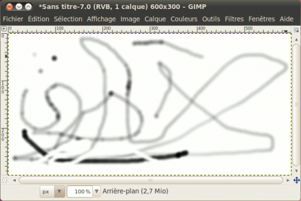Dans le fond, ça fonctionne comme le pinceau, sauf qu'on a une option pour les contours durs.
Par défaut, ça efface complètement là où votre brosse est opaque, mais vous pouvez aussi seulement atténuer des portions avec les options que nous verrons plus loin dans cette sous-partie.
Outil de calligraphie
Cet outil ne peint qu’en noir et simule l’écriture avec une plume de calligraphie en reposant sur le même principe que l’aérographe. Plus vous bougez votre souris rapidement, plus le trait sera fin.
Essayez sur une nouvelle image de 600*300 en signant votre nom.
Ça paraît-tu que je n’ai pas de tablette graphique ? :p
Si vous voulez un trait plus fin, vous pouvez diminuer la taille et augmenter la vitesse du menu sensibilité dans les options de l’outil.
On signe à nouveau notre nom, avec la vitesse maximale et la taille minimale :
Un jour j’vais l’acheter la tablette, un jour…
Il est beaucoup moins probable que vous ayez à l’utiliser, à moins de vouloir faire de la calligraphie numérique ou que vous vouliez seulement signer vos peintures numériques.
Outil de flou et de netteté
Cet outil permet de flouter ou renforcer la netteté d’une portion d’une image. Pratique pour la retouche d'une photo.
Essayez en floutant une première partie de la signature, puis en augmentant la netteté d’une autre partie (en maintenant la touche Ctrl enfoncée au moment de peindre), en répétant plusieurs fois les manip's.
Outil de luminosité
Cet outil permet d’éclaircir ou assombrir des portions d’image. Pratique pour la retouche d’une photo.
Voici un exemple avec des traits gris moyen dont j’ai éclairci une partie, et assombri une autre (Ctrl).
j’ai repassé plusieurs fois, d’où la progression de l’éclaircissement et de l’assombrissement.
Outil de barbouillage
Prisé par les fanatiques de techniques de signature, cet outil étale les portions peintes d’une image.
Voici un exemple, où j’ai passé l’outil sur une portion d’un trait noir :
On peut obtenir des effets différents avec d’autres brosses, comme la brosse Vine par exemple :
Le tour est fait, on passe aux principales options !
Les options des outils
Je vais parler surtout des options que l’on retrouve sur plusieurs outils, pour déjà vous donner une idée de ce que vous pouvez faire.
Mode
Cette option permet d’appliquer des effets en peignant. On verra cela plus en détails dans le chapitre sur les calques, mais pour vous donner un aperçu, je pars avec cette image sur laquelle j’ai appliqué une brosse Galaxy.
Maintenant, je choisis une couleur rouge. Je peins ensuite deux traits sur chacun, avec un mode différent.
De gauche à droite : Superposer, Éclaircir, Éclaircir seulement (éclaircir seulement, éclaircir, assombrir, superposer)
Opacité
Vous ne voudrez pas toujours peindre une couleur opaque sur une image. Pour cela, vous pouvez régler l’option Opacité.
Par exemple, avec la même image sans modification, je peins des traits rouges en mode normal, avec différents degrés d’opacité.
De gauche à droite : 100%, 60% et 30% (100, 75, 50, 25)
Brosse
Je vous avais montré à la changer depuis la fenêtre des brosses, mais pour chaque outil de peinture utilisant les brosses, vous avez une option pour choisir une brosse, sauf que ça se présente différemment lorsqu’on clique sur l’icône de la brosse.
Taille
Vous pensiez que la taille de la brosse était immuable ? Détrompez-vous, ce n’est plus le cas depuis la 2.6 ! Ainsi, vous pouvez agrandir ou rétrécir n’importe quelle brosse, ce qui fait que vous n’avez plus besoin d’avoir plusieurs versions d’une même brosse dans plusieurs tailles comme c'était le cas dans les anciennes versions !
Un exemple avec la brosse Galaxy :
Angle et Proportions
Ces deux options, nouvellement apparues dans les options des outils avec la refonte du moteur de brosses dans la version 2.8, permettent de modifier les proportions et l'angle de n'importe quelle brosse !
Voici quelques exemples de variations pour une même brosse.
[image]
Dynamique de la brosse
Ces options vous permettent d’ajouter des effets à vos traits de peinture, comme la variation de la dureté, de la taille, de l’opacité, de la couleur et même de l'angle suivant la pression (si vous utilisez une tablette graphique), la vitesse et la direction à laquelle vous bougez votre curseur, ou tout simplement de façon aléatoire. En cliquant sur l'icône de gauche, vous aurez accès à de nombreuses dynamiques prédéfinies que vous pouvez tester à souhait !
[image]
Voici quelques exemples d'effets.
[image] De gauche à droite : Track Direction, Random Colour, Velocity Tapering, Speed Size Opacity, Confetti, Dynamics Random, Fade Tapering (j'ai utilisé une brosse différente pour le premier, pour montrer l'angle de la brosse qui suit le tracé, les autres utilisent une brosse ronde ordinaire)
1) Variations par vitesse, 2) Variations aléatoires, 3) Variations par vitesse et aléatoire, 4) Toutes les cases cochées
Si vous regardez dans le bas du sélecteur des dynamiques, vous pourrez voir des icônes, dont le dernier permet d'ouvrir le sélecteur en tant qu'onglet.
[image]
À partir de cet onglet, vous pouvez créer et éditer vos dynamiques de brosse avec les icônes situés dans le bas de l'onglet. :)
Estomper
Cette option n'est utile que si vous utilisez une dynamique de brosse comprenant des effets de fondu, comme « Fade Tapering ». Dans ce cas, vous pouvez faire varier la longueur du fondu, la répéter et même l'inverser. Cette option fait s’estomper le trait jusqu'à ce que ça devienne totalement transparent. Vous pouvez régler la longueur de l’estompage.
Voici quelques exemples avec quelques réglages.
Appliquer fluctuation
Plutôt que de faire de simples traits, pourquoi ne pas faire des traits avec des points éparpillées le long du tracé ? Vous n’avez qu’à l’activer, puis à régler le degré de fluctuation pour avoir un éparpillement plus ou moins prononcé.
Voici un aperçu avec différents réglages :
Ça devient encore plus intéressant avec des brosses personnalisées, comme la brosse Vine par exemple, pour faire un feuillage.
Contour dur
Dispo sur les outils autres que le crayon (qui peint toujours en contour dur) et le pinceau (qui est fait pour peindre avec des bords doux), ceci permet d’effacer, flouter, assombrir ou éclairer avec des contours durs plutôt que des contours doux.
Couleur à partir d’un dégradé
Cette option vous permet de faire des lignes en dégradés. Une fois l’option activée, vous pouvez choisir le dégradé, sa longueur ainsi que le type de répétition.
Voici un exemple avec différents réglages de la longueur.
C’est de plus en plus court !
Il y a d’autres options qui sont plus spécifiques à un outil en particulier, mais je vais vous laisser les découvrir et les tester par vous-mêmes. ;)
Astuce bonus : des lignes droites sans se casser la tête !
Saviez-vous que vous pouvez tracer des lignes droites avec les outils de peinture, sans vous casser la tête ? C’est assez simple et ça marche pour tous les outils que j’ai montrés plus haut !
Premièrement, vous faites un premier point à l’endroit voulu sur votre image. Déplacez ensuite votre souris, vers l’endroit où vous voulez terminer votre ligne, puis en ayant la touche Maj enfoncée, faites votre deuxième point !
Et ô magie, vous avez votre ligne !
Notre survol est terminé, je vous laisse vous amuser un peu avant de passer aux dégradés.
Finissons en beauté avec l’utilisation des dégradés, un outil essentiel pour créer certains effets dans les icônes, boutons et webdesigns.
C’est quoi un dégradé ?
Un dégradé, qu’on peut aussi appeler « fondu » consiste en une transition graduelle entre deux couleurs ou deux tons de couleur. Par exemple, un dégradé de rouge et de blanc commencera rouge, pour pâlir tranquillement jusqu’à devenir complètement blanc, au bout du fondu.
Par exemple ici sur le Site du Zéro, le fond bleu dans l’en-tête est en fait un dégradé utilisant deux tons de bleu clair et vous pouvez d’ailleurs mieux le remarquer à l’endroit où s’affiche le bloc de votre profil, là où s’affichent votre avatar, votre pseudo, votre raccourci vers les messages privés et votre menu d’accès à votre compte.
En haut du bloc, la démarquation est assez visible, mais en bas, ça se confond presque.
Les dégradés servent donc à donner quelques effets sympa, pour rendre un design moins « plat » ou pour ajouter un effet crystal « à la Vista ».
Comment on les utilise ?
Premièrement, les dégradés se font avec l’outil Dégradé que vous pouvez voir dans la boîte à outils :
Maintenant, exerçons-nous sur une image de 600*200.
Maintenant, pour faire un dégradé, vous positionnez d’abord votre curseur sur le point de départ du dégradé. Dans ce cas-ci, on va partir de la gauche vers la droite. Cliquez à gauche de l’image, puis en tenant le bouton gauche enfoncé, déplacez votre souris jusqu’à la droite de votre image.
Relâchez ensuite le bouton.
Et voilà un beau dégradé !
Astuce pour des dégradés droits
Vous voudrez sûrement faire des dégradés parfaitement droits. Dans ce cas, lorsque vous avez le bouton gauche enfoncé pour faire votre dégradé, enfoncez la touche Ctrl. Ceci fera en sorte que vous n’aurez que des angles en multiples de 15° ! Essayez pour voir !
J’ai annulé le premier dégradé pour mieux vous le montrer
Et voilà !
C’est maintenant parfaitement droit !
Choisir un autre dégradé
Tout comme pour les brosses et les motifs, GIMP inclut un sélection prédéfinie de dégradés, et vous pouvez ajouter ou créer vos propres dégradés.
Si vous avez activé le raccourci Brosses-Motifs-Dégradés dans vos préférences, cliquez sur le raccourci des dégradés.
Ou sinon, si vous n’avez pas ajouté la fenêtre des dégradés dans vos onglets, ouvrez la fenêtre avec Ctrl+G.
Vous pouvez voir qu’il y en a un sacré paquet ! :p
Pour la démonstration, cliquez sur PP vers transparent. Ce dégradé vous sera extrêmement utile dans vos réalisations de designs.
Prenez une couleur rouge comme premier-plan, puis refaites un dégradé par dessus le dégradé noir et blanc, cette fois en partant du haut vers le bas.
Seul le rouge a couvert le dégradé du dessous !
Ainsi, rien de plus simple pour faire des fonds d’en-têtes de blocs ou de tableaux ! Une couleur de fond, puis un dégradé PP vers transparent par dessus pour éclaircir ou assombrir, et voilà votre fond prêt à être enregistré !
Les formes de dégradés
Vous pouvez faire d’autres formes de dégradés à part le simple dégradé droit. Dans les options de l’outil, vous avez l’option Forme avec un menu déroulant.
Voici les explications pour les principaux.
Linéaire et bilinéaire
Le dégradé linéaire est celui qu’on a utilisé jusqu’à maintenant. Ça ne fait qu’un dégradé simple. Quant au dégradé bilinéaire, c’est tout simplement un dégradé linéaire en miroir. Pour mieux comprendre, repartez de votre page blanche, puis commencez votre dégradé du milieu vers la droite. Vous verrez que le dégradé se réfléchira vers la gauche !
Radial et carré
Le dégradé radial permet de faire des dégradés ronds, tandis que le dégradé carré permet de faire des dégradés… carrés ! Mais ils partent tous deux du même principe : le dégradé part d’un point central, puis la couleur de départ s’estompe tout autour. La longueur de votre trait détermine donc l’étendue. La direction n’a donc pas d’importance.
Voici un exemple :
Conique symétrique et asymétrique
Ces deux dégradés permettent de faire un effet d’éclairage/ombrage comme s’il s’agissait d’un cône. Cette fois-ci, la longueur du trait n’a pas d’importance. Seule la direction du trait importe puisque ça détermine où se trouvent la lumière et l’ombrage.
Voici quelques exemples :
Suivant la forme (triangulaire, sphérique, excroissance)
Cette fois-ci, ni la longueur, ni la direction du dégradé n’a d’importance. Seule la forme du document ou de la sélection fait varier le dégradé.
Voici quelques exemples :
Spirale horaire et antihoraire
Ces formes de dégradés permettent de faire des dégradés en tourbillons. La direction du trait détermine le sens du départ, et la longueur du trait détermine l’épaisseur de la spirale.
Voici des exemples :
Autres options
Voici les autres options, plus brèves à expliquer, que vous pouvez utiliser pour étendre les possibilités de ce que vous pouvez faire avec les dégradés. Je ne parlerai que de celles que je connais.
Mode
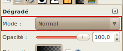
On l’avait vu précédemment avec les outils de peinture et on le verra plus en détail dans le chapitre des calques. Cette option permet d’appliquer des effets avec un dégradé.
Reprenons l’exercice du début de cette sous-partie, en refaisant votre dégradé noir vers blanc de gauche à droite, puis en faisant votre dégradé rouge vers transparent de haut en bas, mais cette fois, en choisissant un mode, comme Éclaircir par exemple. L’effet sera alors très différent !
Opacité
Vous devez vous en douter, cette option vous permet de faire des dégradés semi-transparents, à différents degrés. Refaites la même exercice, avec un mode normal et une opacité plus basse.
Dégradé
J’avais déjà parlé de la sélection du dégradé, mais cette option permet non seulement de sélectionner un dégradé prédéfini, mais aussi de l’inverser !
Un exemple d’inversion, avec un dégradé radial.
Décalage
Cette option permet de décaler le dégradé vers le point d’arrivée. Pour l’exemple, essayez de faire des dégradés radiaux en PP vers transparents, avec différents paramètres.
Répétition
Vous pouvez faire répéter votre dégradé avec cette option.
Voici un exemple de ce que ça donne :
À cette étape-ci, vous pouvez déjà commencer à faire des petites choses, mais les chapitres qui suivent décupleront les possibilités de ce que vous pouvez faire avec Gimp.
Nous voilà maintenant rendus à un gros morceau que vous devrez absolument connaître pour pouvoir faire du graphisme 2D de façon efficace : ce sont les calques !
Mais avant de survoler les possibilités des calques, il faut d’abord savoir ce qu’est un calque et pourquoi leur utilisation est un must à connaître quand on fait de l’infographie 2D.
Pour vous l’expliquer, rien de mieux qu’une analogie scolaire qui s’y prête bien. ^^
Comme des feuilles transparentes superposées
Je ne sais pas si c’est encore aussi répandu dans les écoles, mais quand j’ai quitté les bancs d’école en 2004, les professeurs utilisaient régulièrement une sorte de vieux gros projecteur sur roues avec une grosse lampe halogène sous le plateau où l’on y déposait des feuilles transparentes pour afficher sur un mur des diagrammes ou des textes imprimés sur ces feuilles. C'est certain que les Zéros de mon âge s’en rappellent, mais cela reste à confirmer pour les plus jeunes.
Dans un de mes cours, il était même arrivé que la professeure utilisait une première feuille pour afficher un diagramme vide, et une deuxième feuille pour le corrigé. Elle n’avait qu’à placer la deuxième feuille sur la première pour remplir les cases du diagramme ! Ainsi, elle pouvait utiliser la même feuille autant de fois qu’elle le voulait puisqu’elle n’a pas écrit les réponses sur la même feuille !
En gros, les calques reposent sur le même principe ! Vous n’avez qu’à imaginer une pile de feuilles transparentes, où chaque feuille contient une partie de votre image.
Pour que vous puissiez mieux comprendre, je vous ai fait un schéma avec Dia où je prend l’exemple d'un bouton.
Comme vous voyez, notre bouton est composé de trois calques. L’un contient le contour, un autre contient le fond, et le dernier contient le texte. Et une fois qu’on réunit ces trois calques, on a notre bouton !
Pourquoi utiliser les calques
Maintenant, vous devez vous demander pourquoi les utiliser, n'est-ce pas ?
Oui, explique-moi pourquoi les utiliser !
Pour reprendre notre bouton de tantôt, imaginez maintenant que vous voulez changer la couleur du contour du bouton. Sur une image déjà aplatie, vous auriez risqué d’abîmer l’image, tandis que si vous travaillez sur un fichier XCF ou PSD où les calques sont encore séparés, vous pouvez modifier le contour, sans que ça n’affecte le reste de l’image !
Aussi, les calques permettent d’appliquer des effets particuliers (modes) qui affecteront les calques du dessous, comme l’assombrissement, le changement de teinte, la superposition, etc. Cela donne des possibilités intéressantes dans la réalisation du fond d’un bouton, l’ajout d’un effet sur un texte ou sur un fond de menu ou pour adoucir une ombre.
Sachez aussi que la création des animations GIF avec le module par défaut de Gimp repose sur le principe qu’une animation est composée d’une série d’images se succédant ou se combinant et donc, cela requiert d’utiliser les calques pour faire les différentes images de l’animation.
Et finalement, il y a un principe à respecter en design, c’est de penser réutilisable. C’est à dire que l’on fait en sorte que les composantes colorées d'un bouton par exemple (le contour, le fond) ne seront en fait qu’une couleur unie, que l’on pourra changer à loisir, puisque les effets seront faits par les calques du dessus. J’utilise beaucoup ce principe pour mes boutons et mes icônes de statut des sujets pour mes thèmes de forums, puisque dans ces cas de figure, je vais faire plusieurs icônes/boutons dont les dimensions et effets seront communs et donc, autant réunir toutes les composantes en un seul fichier source .XCF ! Dans ce cas, je n’ai qu’à masquer certains calques et en afficher d’autres pour obtenir mes différents boutons !
Donc si vous comptez faire un jour des webdesigns, commencez tout de suite à utiliser les calques, cela vous évitera bien des maux de têtes lorsque vous voudrez modifier, refaire ou masquer un élément dans votre design.
Maintenant, vous comprenez mieux l’utilité des calques ? Allons-y maintenant à leur découverte. ;)
Si vous avez organisé votre interface comme je vous l’ai montré dans le chapitre 2, vous devriez normalement avoir ajouté la fenêtre des calques parmi les onglets en dessous de votre boîte à outils. Sinon, vous pouvez faire apparaître cette fenêtre depuis la fenêtre centrale en passant par Fenêtres > Fenêtres ancrables > Calques ou en faisant Ctrl+L.
Mais pour le moment, si vous n’avez aucune image ouverte, votre fenêtre ou onglet sera vide et les fonctions seront grisées. Créons donc une nouvelle image de 250*250 pixels avec un remplissage blanc.
À partir de là, vous devriez avoir ceci :
Vous l’avez peut-être compris : à chaque fois que vous créez un nouveau document ou que vous ouvrez une image en JPEG, GIF (statique seulement), PNG ou tout autre format ne supportant pas les calques, cette image n’a qu’un seul calque qui est celui de base pour contenir l’image elle-même.
Passons maintenant à un bref survol de cette fenêtre avant de continuer :
Je vous les ai numérotés pour mieux vous décrire les différentes parties.
L’œil : Ceci indique si votre calque est visible ou non. Si vous cliquez sur l’œil, celui-ci disparaîtra, et vous ne verrez plus votre calque blanc sur l’image centrale ! Essayez-le pour voir !
La chaîne : Ceci est utile pour verrouiller plusieurs calques ensemble afin de, par exemple, les déplacer d’un endroit à une autre dans l’image, sans avoir à déplacer les calques séparément, ni avoir à se battre pour les aligner lors du déplacement de ces calques. En gros, ces calques verrouillés ensemble se comportent comme un seul calque !
La miniature : Ceci vous donne un aperçu en miniature de votre calque. Elle peut indiquer si ce calque est un calque de texte (auquel cas un icône avec un T s’affichera) ou un calque régulier.
Le nom du calque : Le premier calque par défaut s’appelle toujours Arrière-plan (ou Background si votre Gimp est en anglais), mais vous pouvez changer ce nom en double-cliquant dessus pour ensuite le renommer avant de valider en tapant sur la touche Entrée. Il est important de bien nommer vos calques, car si vous travaillez sur un projet qui comporte un grand nombre de calques ou si vous voulez distribuer le fichier .xcf de votre travail, il faudra que chacun puisse s’y retrouver dans les calques.
Mode : Cette fonctionnalité permet de modifier le comportement d’un calque en agissant sur les calques du dessous pour créer des effets. J’en parlerai plus en détail plus loin dans ce chapitre.
Opacité : Cette fonctionnalité vous permet de baisser l’opacité d’un calque pour le rendre semi-transparent ou pour atténuer un effet trop fort. Essayez-le en la faisant varier pour voir l’effet sur votre calque blanc.
Verrouiller le canal alpha : Ceci permet de ne pas pouvoir intervenir sur les parties transparentes. Si la case est cochée, vous ne pourrez ni peindre une région transparente, ni remplir des zones se situant dans ces régions, et les filtres comme le flou n’auront aucun effet sur ces régions. J’en parlerai plus loin.
Les boutons du bas : Ces boutons vous permettent un accès direct aux fonctions de gestion des calques, comme la création d’un nouveau calque, le déplacement des calques dans la pile, la suppression d’un calque, la duplication d’un calque, et l’ancrage d’un calque flottant résultant d’un morceau de calque que vous venez de coller, pour le fusionner au calque visible le plus haut. Je vous parlerai du copier-coller lorsque ce sera le temps.
On a maintenant fini le survol et on va maintenant commencer à aller plus en profondeur.
Les modes de calques sont une notion qui sera très importante à savoir lorsqu’on manipule les calques, puisque les modes de calque permettent de changer le comportement d’un calque pour agir comme un filtre qui modifiera l’apparence des calques en dessous de celui-ci, en utilisant des calculs mathématiques pour traiter la valeur de chaque pixel de chaque calque.
Pour l’exercice, je vais utiliser deux images qui serviront comme image du dessous, et chacune de ces images aura une deuxième image qui servira de masque pour la démonstration des modes de calque.
Voici mes images :
Et leurs masques respectifs :
Pour pouvoir tester par vous-même, vous pouvez télécharger ces deux fichiers .xcf contenant chacun l’image avec son masque :
Puis au moment de les ouvrir, vous n’avez qu’à les sélectionner tous les deux (Ctrl+clic sur chaque fichier supplémentaire) avant de valider, les deux fichiers s’ouvriront en même temps, chacun dans une fenêtre séparée.
On est maintenant prêt pour la démo des modes de calque !
Normal
C’est le mode par défaut pour tout calque nouvellement créé. L’image du dessus cache tout simplement l’image du dessous. Mais si vous baissez l’opacité, l’image du dessous devient visible et vous avez alors un mélange des deux images. Baissez l’opacité pour le constater.
Dans les deux cas, l’opacité de l’image du dessus (le masque) est à 50%.
Dissoudre
L’image du dessus se dissout dans l’image du bas. À 100% d’opacité, la dissolution est presque nulle, mais si vous abaissez l’opacité, cette image se dissoudra de plus en plus.
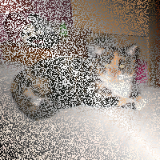
Dans les deux cas, l’opacité de l’image du dessus est à 50%.
Multiplier
Sous ce mode, les valeurs foncées s’accumuleront et le calque du dessus foncera donc le calque du dessous. Par exemple, si vous avez un croquis en noir et blanc et que vous voulez colorier, ce mode est très pratique, puisque vos lignes noires ne seront pas du tout cachées par la couleur : elles s’accumuleront ! C’est donc tout indiqué pour la colorisation !
Diviser
Là c’est tout le contraire : l’image est pâlie par les zones sombres du masque. Le résultat donne une image plus claire, et dans certains cas, on peut constater même un effet de négatif.
Écran
L’image du dessous soumis à ce mode paraîtra délavée. Plus la couleur est foncée, plus le calque paraîtra transparent. Les zones noires sont donc complètement transparentes, tandis que les zones blanches seront complètement blanches. Pratique pour les effets de lumière.
Superposer
Sous ce mode, l’image du dessous sera légèrement pâlie par les zones claires, et légèrement foncée par les zones sombres.
Éclaircir
L’image du dessous se retrouve éclaircie par l’image du dessus et certaines couleurs pourraient se retrouver inversées. Le noir n’a donc aucun effet. Cette technique est plus indiquée pour les images en niveaux de gris travaillées avec la peinture.
Assombrir
L’image du dessous se retrouve assombrie par l’image du dessus. Le blanc n’a donc aucun effet. Cette technique est plus indiquée pour les images en niveaux de gris travaillées à la peinture.
Lumière dure
Ce mode est une combinaison des modes Multiplier et Écran. Sur l’image du dessous, les parties affectées par les zones noires seront toujours noires, tandis que les zones affectées par les zones blanches seront toujours blanches.
Lumière douce
Ce mode ressemble énormément au mode Superposer et a tendance à adoucir les bords un peu trop tranchants.
Extraction de grain
Cet effet fait un peu penser à Diviser, mais à la différence que le blanc assombrit au lieu de ne rien faire. Le résultat peut donc causer une inversion de couleurs.
Fusion de grain
Ceci est tout le contraire du mode Extraction de grain.
Différence
Calcule la différence entre les valeurs RVB du calque du dessus et du calque du dessous. Si la valeur de l'image du dessus est supérieure à celle de l’image du dessous, l’image apparaîtra normale, mais foncée. Si la valeur de l’image du dessus est inférieure à celle de l’image du dessous, l’image apparaîtra en négatif. Ainsi, sur un calque noir, l’image apparaîtra normale, tandis que sur un calque blanc, l’image apparaîtra entièrement en négatif.
Addition
Les valeurs RVB des deux calques s’additionnent (maximum: 255) pour retourner une image éclaircie.
Soustrait
Les valeurs RVB de l’image du dessous (minimum : 0) sont soustraites par celles de l’image du dessus, pour retourner une image foncée.
Assombrir seulement
Pour chaque pixel, la valeur la plus basse entre les deux images sera conservée, ce qui fait que les zones blanches n’auront aucun effet tandis que les zones noires donneront des pixels noirs. Pratique par exemple pour les affiches « Wanted » style western où le portrait était dessiné en noir sur une feuille beige.
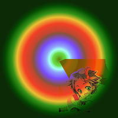
Éclaircir seulement
Pour chaque pixel, la valeur la plus haute entre les deux images est conservée, ce qui fait que les zones noires n’auront aucun effet, tandis que les zones blanches donneront des pixels blancs.
Teinte
Modifie la teinte du calque du dessous, mais pas la saturation, ni la luminosité. Aucun effet si le calque du dessous est en niveaux de gris.
Saturation
Modifie la saturation du calque du dessous, mais pas la teinte, ni la luminosité. Si le calque du haut est en niveau de gris, le résultat sera donc en niveaux de gris.
Couleur
Modifie la teinte et la saturation du calque du dessous, mais pas la luminosité. Utile pour recolorer une image. Là aussi, quand le calque du dessus est en niveaux de gris, le résultat sera désaturé.
Valeur
Modifie la valeur du calque du dessous, mais pas la teinte, ni la saturation. Utile pour révéler les détails d’une image sans changer sa couleur.
Et comment savoir quel mode de calque choisir ?
Il n’y a qu'une chose que je peux vous conseiller : n’hésitez pas à les tester en faisant joujou avec ! C’est comme ça que j’ai appris à les utiliser.
Maintenant, c’est bien beau parler des modes de calque, mais il faut aussi savoir les manipuler pour pouvoir agencer le tout pour composer notre image finale.
Mais d’abord, je vais vous parler des différents moyens d’accéder aux fonctionnalités relatives aux calques, puisqu’il y en a plusieurs.
Par le menu Calque de la fenêtre centrale : Je vous faisais passer par ce menu jusqu’à maintenant, mais ce n’est pas la seule façon d’accéder aux fonctions, et ce n’est pas toujours la plus efficace.
Par les icônes en bas de la fenêtre des calques : Au nombre de six, ces fonctions vitales sont rapides d’accès. Vous pouvez ainsi créer des calques, les déplacer dans la pile ou en supprimer depuis ces boutons.
Par le menu contextuel (clic-droit) : Si vous faites un clic-droit directement sur un calque dans la fenêtre, vous aurez accès à plein de fonctionnalités. Il est souvent plus efficace de passer par le menu contextuel que par le menu Calque, puisqu’on peut sélectionner directement le calque en faisant notre clic-droit.
Par les raccourcis clavier : Certaines fonctionnalités ont un raccourci clavier déjà défini par défaut. Si vous avez activé les raccourcis clavier dynamiques, vous pouvez en définir de nouveaux pour les fonctions qui n’en ont pas, comme je vous l’avais montré dans le chapitre 2.
Vous choisissez donc la méthode qui vous convient le mieux selon la fonction à utiliser.
Faisons joujou avec les fonctions de manipulation !
Pour nous exercer, on va partir d’une image de 250*250 pixels avec un remplissage blanc.
Puisqu’on n’a pas encore exploré les outils de sélection, je vais plutôt utiliser des images provenant du site Openclipart.org et colorer l’ensemble en bleu, pour vous montrer les fonctions de manipulation des calques.
Choisissez tout de suite une couleur bleue (ex : 005ae1) comme couleur de premier-plan.
Créer un calque
Pour le moment, on n’a qu’un seul calque. On va en créer un deuxième, qui va servir pour la coloration de notre logo en bleu, avec la méthode qui vous convient parmi les quatre que j’ai citées plus haut (menu Calque, boutons du bas, clic-droit ou raccourci clavier). Personnellement, j’utilise le plus souvent le bouton dans le bas de la fenêtre :
Une fenêtre comme celle-ci devrait apparaître :
Le plus souvent, vous serez amené à utiliser les valeurs par défaut, pour avoir un calque transparent de la même taille que le canevas. Mais pour ce cas-ci, on a besoin d’un calque entièrement bleu, donc si vous avez défini une couleur bleue comme couleur de premier plan, cochez Couleur de premier plan.
Sinon, prenez tout simplement Transparence et une fois validé, remplissez le calque de bleu avec le pot de peinture.
Voilà ce que ça donne dans notre fenêtre/onglet des calques, une fois validé :
Changer de mode
Puisqu’on veut colorer notre logo en bleu, allez dans votre fenêtre des calques et sélectionnez Couleur dans le menu déroulant Mode.
Mais… c’est redevenu tout blanc !
C’est normal puisque le blanc pur et le noir pur ne peuvent pas être influencés par ce mode de calque qui ne change pas la valeur (luminosité) des pixels du calque du dessous. Par contre, vous verrez la différence lorsque vous aurez ajouté les images dont je vous ai parlé.
Ajouter des images dans votre canevas
Nous sommes maintenant prêts à ajouter nos images. Pour cela, rien de plus simple ! Allez dans Fichier > Ouvrir en tant que calques, puis parcourez les dossiers pour aller dans celui où vous avez enregistré vos images. Avec un Ctrl+clic, sélectionnez vos trois images.
Validez ensuite. Vos images s’ouvriront dans votre canevas, ce qui vous donne maintenant cinq calques.
Mais… ils ne rentrent pas dans le canevas, ils sont trop gros !
Pas de panique ! Vous vous souvenez du chapitre Les opérations de base où je vous ai montré à réduire la taille d’une image ?
Oui mais, je veux seulement que ça rentre dans le canevas, pas rapetisser l’image complète !
Non non, on n’utilisera pas Échelle et taille de l’image. Il existe une fonction équivalente pour n’agir que sur un calque, et c’est donc ce qu’on va utiliser pour les trois images nouvellement ouvertes.
Redimensionner un calque
On va commencer par le calque le plus haut, soit le Tux. Depuis la fenêtre centrale, allez dans Calque > Échelle et taille du calque.
La fenêtre que vous aurez ressemblera beaucoup à ce que vous avez vu, mais avec l’option de la résolution en moins.
En gardant les proportions, baissez les valeur pour que la hauteur du calque du Tux soit à 200 pixels, puis validez.
Là c’est beaucoup mieux, on voit notre tux au complet !
Il est maintenant temps de faire les deux autres. Dans votre fenêtre des calques, sélectionnez le calque du serveur, puis faites la même opération en réglant la hauteur à 160 pixels. Sélectionnez ensuite le calque du globe, juste au dessus du calque bleu, et encore une fois, faites la même opération, en réglant cette fois les dimensions à 200 pixels.
Vous devriez maintenant avoir ceci :
Déplacer un calque
Pour le moment, nos trois calques sont centrés et on aimerait ça les positionner pour faire un joli petit montage où le Tux et le serveur sont en avant-plan et le globe en arrière-plan.
Prenez l’outil de déplacement (
), puis sur l’espace de travail, pointez le calque que vous voulez déplacer, puis faites un cliquer-glisser pour le positionner où vous le voulez.
Si parfois vous éprouvez des difficultés à pointer un calque pour le déplacer, soit parce qu’il est trop transparent, soit parce que les lignes sont fines, allez dans les options de l’outil pour cocher Déplacer le calque actif.
De cette façon, où que vous pointez, cela déplacera toujours le calque sélectionné. ;)
Maintenant, déplacez le serveur en bas à gauche, le Tux en bas à droite, puis le globe en haut au centre, pour faire comme ceci :
Notre logo commence à prendre forme, mais nos calques ne sont pas bien positionnés dans la pile.
Monter / Descendre des calques
Maintenant, même si nos trois images sont dans le bon ordre par pur hasard, ils ne sont pas colorés en bleu car le calque bleu est en dessous d’eux. Pour cela, allez dans la fenêtre des calques, sélectionnez le calque bleu dans la pile, puis utilisez les flèches pour le monter.
Voici ce que ça donne dans votre pile, avant et après :
Voilà ce que ça donne maintenant :
C’est beaucoup mieux ! Notre objectif est maintenant atteint, mais on va encore faire joujou un petit peu.
Verrouiller un calque
Si vous devez déplacer plusieurs calques vers un même endroit, les verrouiller ensemble vous évitera bien des maux de tête. Pour la démonstration, allez dans votre fenêtre des calques, et vis à vis les trois cliparts (le Tux, le serveur et le globe), cliquez sur l’espace vide entre l’œil et la miniature. Une chaîne apparaîtra.
Comme ça, lorsque vous déplacerez un des calques, les autres suivront !
Vous pouvez maintenant ranger vos Tylenol (ou Doliprane, selon votre localisation). :p
Copier un calque
Et si on décidait qu’on voulait des jumeaux et non un seul Tux à côté du serveur ? Pour cela, après avoir déverrouillé vos calques, cliquez-droit sur le calque du Tux dans la fenêtre des calques, puis faites Dupliquer le calque, ou encore sélectionnez simplement le calque et cliquez sur l’icône Dupliquer le calque en bas.
Avec l’outil de déplacement réglé sur Déplacer le calque actif, placez ce nouveau calque pour que les deux Tux soient côte-à-côte !
Afficher / Masquer un calque et régler son opacité
Maintenant, on pourrait décider tout d’un coup qu'on ne veut plus notre logo bleu totalement monochrome, mais avec des petites variations de teintes. Pour cela, sélectionnez votre calque bleu, puis abaissez son opacité.
Voici le résultat, avec différents réglages :
De gauche à droite : 100%, 50% et 25% d’opacité
Mais si vous avez besoin de masquer totalement un calque, vous n’avez pas besoin d’abaisser l’opacité à zéro. Il existe une fonctionnalité plus appropriée qui vous permet de le faire en un clic, sans toucher à l’opacité. Cliquez tout simplement sur l'œil vis à vis le calque à masquer. Par exemple, masquons le calque bleu.
Le calque bleu est masqué, notre logo n’est donc plus bleu
Ajouter / Retirer le canal alpha
Lorsque vous créez une nouvelle image avec les valeurs par défaut ou que vous ouvrez une image qui n’est pas transparente (une photo par exemple), le calque de votre image n’a pas ce qu’on appelle un canal alpha. Le canal alpha (ou couche alpha) permet de définir le degré de transparence d’un pixel, et cette information est supportée par le format PNG et les formats source (XCF, PSD). En contrepartie, il n’est pas supporté par JPEG, donc faites bien attention à bien choisir le format PNG lorsque vous voulez enregistrer une image que vous venez de détourer, afin de ne pas avoir à tout recommencer !
Ainsi, lorsque vous créez un nouveau calque transparent ou que vous ouvrez un PNG transparent, le calque a d’office cette couche alpha.
Il peut donc arriver des fois que vous ayez besoin d’ajouter un canal alpha à un calque opaque, ou de retirer le canal alpha d’un calque qui a besoin d’être opaque. Ces deux fonctions, soit Ajouter un canal alpha et Retirer le canal alpha, sont à la fois disponibles depuis un clic droit sur le calque sélectionné, ou depuis le menu Calque.
Pour faire un exemple, retirez le canal alpha de l’un des deux Tux. Vous verrez que celui-ci deviendra opaque tout autour.
Et dans la fenêtre des calques, vous verrez aussi que le nom du calque est maintenant en gras :
Il est donc important que vous sachiez ce point, car j’ai vu des débutants se battre à essayer de gommer sur un calque qui n’a pas de canal alpha, ce qui fait qu’ils n’arrivaient qu’à peindre en blanc.
Supprimer un calque
Si vous devez faire un ménage dans vos calques, vous faites soit un clic-droit sur le calque sélectionné pour ensuite faire Supprimer le calque, ou soit vous cliquez sur l’icône en forme de cercle rouge barré pour supprimer le calque sélectionné.
Pour l’exemple, allons supprimer le calque du Tux devenu opaque.
On n’a plus les jumeaux… :(
Fusionner vers le bas
Je trouve cette fonctionnalité bien pratique en webdesign. Elle permet de fusionner rapidement un calque avec son voisin du dessous. Pour le faire, vous faites un clic-droit sur le plus haut des deux calques à fusionner, puis vous faites Fusionner vers le bas. Essayez-le avec les trois cliparts.
Maintenant, on a fait le tour des fonctionnalités que je voulais vous montrer. Il y en a d’autres, mais je voulais montrer les principales qui, personnellement, me sont les plus utiles.
Masquez maintenant le calque blanc. Vous êtes maintenant prêt à fusionner le tout pour l’exporter.
Fusionner ou aplatir ?
Lorsque l’on veut exporter le travail final dans un format courant d’image, les calques ont besoin d’être fusionnés. Mais attention ! Vous avez deux choix et vous devez savoir bien les différencier pour choisir ce qui convient le mieux. Ces deux choix sont accessibles depuis le clic-droit sur un calque, ou depuis le menu Calque. Les voici.
Fusionner les calques visibles : tous les calques qui ne seront pas masqués (et donc, qui ont l’œil affiché vis-à-vis ces calques) seront fusionnés entre eux pour former l’image finale. Si vos calques visibles n’ont pas les mêmes dimensions ou sont décalés, le calque final combinera les dimensions de tous ces calques, ce qui donne un calque plus grand, mais vous avez quand même le choix de rogner le tout avant de valider la fusion. La transparence, s’il y en a, sera conservée. Vous devez donc choisir cette méthode si vous voulez enregistrer un PNG transparent par exemple.
Aplatir l’image : tous les calques visibles qui ne sont pas masqués sont fusionnés ensemble, et tous les calques masqués sont supprimés. De plus, le calque final a les mêmes dimensions que le canevas, et votre image perd sa transparence, qui se retrouve donc remplacée par du blanc.
Pour mieux vous montrer, voici ce que ça donne sur mon image :
À gauche, avec Fusionner les calques visibles, et à droite, avec Aplatir l’image.
Donc, si vous voulez conserver la transparence, ne prenez pas Aplatir l’image ! J’ai déjà vu des cas où un utilisateur débutant avait eu à faire un détourage de son image nouvellement créée parce qu’il avait fait Aplatir l’image au lieu de Fusionner les calques visibles.
Maintenant, nous voilà prêts à une dernière chose que je veux vous montrer et que je trouve pratique pour cacher des bouts de calque.
Avant de terminer avec les calques, je veux vous montrer une fonctionnalité très utile pour cacher des bouts de calque sans effacer : les masques de calque !
C’est quoi ça ?
Si vous êtes familier avec Photoshop, vous devez sûrement déjà connaître cette fonctionnalité qui, dans ce cas, s’appelle masque de fusion.
Pour les autres, pour qui c’est la première fois qu’ils touchent à un logiciel de traitement d’image gérant les calques, je vais vous imager ça. Imaginez une feuille de papier où vous avez du contenu imprimé. Imaginez maintenant que vous ajoutez une feuille par dessus et que cette feuille a des trous. Dans ces trous, on voit le contenu imprimé, tandis qu’en dehors des trous, ce contenu est caché. Une partie de ce contenu est donc cachée par cette feuille. Les masques de calque sont comme cette feuille trouée, qui cache certaines parties du calque auquel il y est relié.
Fonctionnement et utilisation des masques
Pour vous montrer comment utiliser les masques de calque, rien ne vaut une démonstration avec un exercice !
L’exercice que j’ai choisi est la fusion de deux photos de paysage, où l’on remplace le ciel de la première photo par celui de la deuxième photo. Pour cela, une recherche sur Flickr en me limitant aux photos sous licence CC-BY m’a permis de trouver deux photos de paysage libres dont voici les adresses pour les télécharger :
Maintenant, on va importer notre deuxième image dans la première en l’ouvrant comme un calque. Pour cela, allez dans Fichier > Ouvrir en tant que calques puis sélectionnez l’image en question.
Une fois validé, vous vous retrouvez maintenant avec deux calques sur la même image :
Comme vous le voyez, un alignement et du rognage du canevas seront nécessaires avant de pouvoir fusionner les deux images. Avec l’outil Déplacer (
), descendez le calque du dessus pour que l’horizon soit plus bas que celui de la première image, afin de pouvoir remplacer entièrement le ciel.
Ensuite, avec Image > Taille du canevas, rognez l’image pour ne garder que la zone où les deux calques se chevauchent. Vous devriez ainsi obtenir ceci :
On est maintenant prêt pour fusionner nos deux photos !
Allez dans votre fenêtre des calques. Faites un clic-droit sur le deuxième calque, puis allez dans Ajouter un masque de calque. Vous aurez une fenêtre comme ceci :
Dans ce cas-ci, laissez les valeurs par défaut comme sur la capture. Une fois validé, vous verrez qu’un carré blanc est apparu vis-à-vis le calque no.2. C’est votre masque de calque.
Réinitialisez vos couleurs de premier plan et d’arrière-plan afin d’avoir le noir et le blanc, puis prenez votre outil Pinceau (
).
Avant de commencer à peindre, vous devez savoir ces principes tout simples : tout ce que vous peindrez en noir sera caché, et tout ce que vous peindrez en blanc s’affichera totalement. Et si vous prenez une couleur grise ou une autre couleur qui ne sera ni noire ni blanche, la partie peinte sera partiellement transparente.
Maintenant, on commence à peindre ! Puisque nous devons cacher la partie du bas du calque du dessus, vous devez donc peindre dans le bas, avec la couleur noire. Commencez avec une grosse brosse, en réglant Échelle à une valeur élevée dans les options de l’outil, puis allez en rapetissant cette valeur à mesure.
Au secours ! Ça beurre en noir dans le bas !
Si ça vous arrive, c’est parce que c’est votre calque et non votre masque qui est sélectionné. Pour vous en assurer, retournez dans votre fenêtre des calques et cliquez sur votre masque pour qu’il soit bien sélectionné.
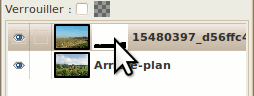
Faites aussi un coup de Édition > Annuler ou Ctrl+Z au besoin si vous avez peint très près de la limite entre la partie à cacher et la partie à garder.
Maintenant, poursuivez la peinture du bas de votre calque et vous verrez que le village dans le calque du dessous commence à apparaître au travers.
Continuez à peindre jusqu’à ce que vous commenciez à voir le ciel du calque du dessous, ce n’est pas grave si ça dépasse.
Prenez maintenant votre blanc et une brosse floue assez petite pour corriger les parties où vous avez un peu trop enlevé de ciel.
En prenant une brosse floue, cela évite d’avoir une démarcation nette entre les deux calques et votre nouveau ciel s’intégrera donc mieux.
Voici ce que ça me donne après la correction avec le blanc :
Fonctions relatives au masque
Maintenant, je vais vous montrer quelques fonctions relatives aux masques, pour vous montrer les possibilités sur ce qu’on peut faire avec les masques. Notez que toutes ces fonctions sont accessibles depuis la fenêtre des calques en faisant un clic-droit sur le masque.
Afficher le masque sur l’image
Cette fonction vous permet de visualiser votre masque dans la fenêtre d’image afin de pouvoir faire quelques ajustements au besoin. Faisons-le en cliquant droit sur le masque et en allant dans Afficher le masque. Vous le voyez maintenant dans votre fenêtre d’image !
Pour désactiver son affichage, vous refaites tout simplement la même chose !
Modifier le masque de calque
Bien que ceci apparaisse à partir du clic-droit, je ne l’utilise pas, puisque utiliser cette fonction revient à la même chose que de sélectionner le calque (décoche la fonction) ou le masque (coche la fonction) selon ce qu’on veut modifier Vous pouvez l’essayer quand même, pour remarquer après que lorsque vous peindrez, vous allez beurrer votre image avec votre noir ou votre blanc.
Désactiver le masque
Cette fonction désactive votre masque, ce qui fait qu’il n’aura plus aucun effet sur votre calque. Lorsque vous le désactivez, la miniature de votre masque sera encadrée de rouge. Essayons-le, pour constater qu’on voit à nouveau le bas de notre paysage du dessus :
ainsi que le cadre rouge autour de la miniature :
Pour le réactiver, refaites tout simplement la même manip.
Masque vers Sélection
Cette fonction vous permet de générer une sélection à partir de votre masque. La sélection couvrira toute la partie blanche du masque. Ceci vous permet donc d’appliquer la forme du masque sur d’autres calques, voire sur d’autres masques. Essayons-le, et vous verrez des « fourmis » courir autour de tout le haut de votre image !
Supprimer le masque de calque
Si vous avez foiré votre masque et que vous n’arrivez pas à corriger votre bourde, il est parfois plus simple de recommencer avec un masque neuf. Pour cela, vous pouvez le supprimer depuis un clic-droit sur votre masque. Vous pouvez l’essayer, pour constater que le bas du calque du dessus est à nouveau visible et que la deuxième miniature vis-à-vis ce calque est disparue. Vous n’avez qu’à annuler votre action pour retrouver votre masque.
Appliquer le masque de calque
Lorsque votre masque est finalisé, vous pouvez l’appliquer au calque. En faisant ainsi, vous perdrez votre masque et toute la partie du calque qui est couverte par le noir devient transparente. Vous ne pourrez donc plus modifier votre masque à partir de ce moment, sauf si vous annulez.
En général, lorsque vous exportez votre image en JPEG, GIF ou PNG, on vous demandera d’appliquer le masque à son calque.
Maintenant, si vous n’avez pas annulé vos manipulations que vous avez faites pendant que je vous montrais les fonctions, annulez-les avant d’appliquer le masque. Une fois tout cela fait, il ne vous reste qu’à sauvegarder votre image.
Voici le résultat final :
Les masques de calque ne servent pas seulement à fusionner deux images ensemble. On peut aussi les utiliser pour détourer un personnage ou un objet, ainsi que pour d’autres usages que j’oublie au moment même d’écrire ce paragraphe.
Bien que ce bout ne soit pas aussi gros que ce que nous allons voir juste après, il n’était pas moins essentiel pour l’apprentissage. Jusqu’ici, vous avez déjà fait un grand bout de chemin, mais il nous en reste à faire dans les bases à apprendre, puisqu’il y a les sélections que nous n’avons pas encore vues et là aussi, il s’agit d’une autre base que l’on doit connaître.
Attaquons-nous maintenant à un autre gros morceau que vous devez absolument apprendre pour bien exploiter les possibilités de GIMP : les sélections !
Les sélections consistent à ne prendre qu’une partie de l’image afin de ne travailler QUE sur cette partie-là. Par exemple, si je prends l’outil de sélection rectangulaire et que je n’encadre que la partie en haut à gauche de l’image, je ne pourrai remplir, peindre, effacer, copier, couper ou flouter QUE cette partie là. Les autres parties ne pourront pas être modifiées tant que cette sélection reste active.
Ainsi, c’est grâce aux sélections que vous arriverez à faire diverses manipulations, comme un détourage, une retouche d’une partie précise, la création d’une forme qui deviendra un élément de design, et bien d’autres choses !
Dans ce chapitre-ci, nous allons voir les bases, pour ensuite vous proposer un exercice d’échauffement en vu du chapitre suivant qui sera le premier TP du cours.
On ne peut pas montrer à faire des sélections sans montrer les outils dont on a besoin pour les faire. Je vais donc vous les présenter.
Ceux-ci sont au nombre de six :
Pour les trois premiers outils, partez d’une nouvelle image blanche de 600x300. Pour les autres, je vous donnerai le lien de l’image à utiliser que j’aurai trouvée sur Flickr.
Allons-y !
Sélection rectangulaire
Comme son nom l’indique, cet outil fait tout simplement des carrés et des rectangles.
Sur votre nouvelle image blanche, cliquez à un endroit, puis avec le bouton gauche enfoncé, déplacez votre souris avant de relâcher. Vous avez votre sélection !
Vous remarquerez des genres de poignées aux coins. Cliquez-glissez sur un de ces coins, pour remarquer que vous pouvez étirer ou rétrécir votre sélection sur les deux sens !
Si vous placez votre souris au milieu d’un côté avant de cliquer-glisser, vous pouvez rétrécir ou étirer sur un sens !
Ou encore, en plaçant votre souris au milieu de la sélection pour ensuite faire un cliquer-glisser, vous pouvez déplacer votre sélection !
Maintenant, vous n’avez qu’à remplir votre sélection avec le pot de peinture ou avec les raccourcis-clavier et vous voilà avec un rectangle noir !
Si vous voulez faire des rectangles aux coins arrondis, nul besoin d’utiliser Sélection > Rectangle arrondi que je vous déconseille personnellement pour la simple raison qu’on ne peut régler le rayon qu’en %, ce qui ne permet pas de régler au pixel près et qui a la fâcheuse habitude de faire des bourrelets aux deux bouts lorsque le rayon est trop fort.
les bourrelets aux bouts, cépabô !
Pour ces raisons, je vous conseille plutôt d’utiliser l’option Coins arrondis que vous retrouverez dans les options de votre outil de sélection rectangulaire :
Cette option a l’avantage d’être réglable au pixel près, ce qui vous évitera bien des maux de tête lorsque la précision est nécessaire ! Et ça ne fait pas ces affreux bourrelets quand le rayon est élevé !
Voilà avec différents rayons :
De gauche à droite : 0px, 5px, 20px, 50px
Sélection elliptique
Comme certains s’en doutent donc, cet outil permet de faire des sélections en forme de cercles et d’ellipses (cercles écrasés à différents degrés).
Tout comme avec la sélection rectangulaire, faites votre sélection, de la même façon que vous l’avez fait pour la sélection rectangulaire.
Vous remarquerez que tout comme pour les sélections rectangulaires, vous avez des poignées qui vous permettent d’étirer/rétrécir sur deux sens si vous utilisez les coins.
ou sur un sens en utilisant le milieu des bords.
ou la déplacer en utilisant le milieu.
Il ne vous reste plus qu’à remplir (ou peindre ou faire ce que vous voulez).
Sélection à main levée
Aussi communément appelé « lasso », cet outil permet de tracer des sélections de forme irrégulière.
Pour l’utiliser, cliquez sur votre image blanche, puis en gardant le bouton enfoncé, déplacez votre souris comme si vous vouliez entourer quelque chose, en relâchant le bouton lorsque vous aurez rejoint votre point de départ. Votre tracé deviendra une sélection !
Essayez maintenant en ne gardant pas le bouton enfoncé après avoir cliqué. Vous verrez qu’une ligne vous suit depuis le point de départ. Cliquez une deuxième fois puis vous verrez une droite tracée, puis une ligne qui vous suit depuis le deuxième point. Faites d’autres points jusqu’à ce que vous rejoigniez votre point de départ, pour créer ainsi une sélection polygonale !
Ainsi, contrairement à Photoshop où l’on doit utiliser deux outils distincts pour les sélections irrégulières et les sélections polygonales, on n’a besoin que d’un outil sous GIMP, ce qui fait que vous pouvez même utiliser les deux en même temps, comme par exemple pour faire ce chapeau de cook !
Tiens, ça me donne envie de faire une fournée de biscuits. ^^
Aussi appelé « baguette magique », cet outil permet de sélectionner des zones de couleur et de luminosité similaire.
Pour l’exercice, ouvrez l’image du Tux avec les boîtes de Spam. Ensuite, prenez l’outil Sélection contiguë et cliquez à côté de notre manchot.
Pour le moment, on n’a sélectionné qu’une petite zone, car on n’a pas encore réglé le seuil.
Seuil ? C'est quoi ça ?
Vous avez déjà entendu parler du « seuil de la pauvreté » ? En fait, on parle de « seuil » lorsqu’on définit une condition, ainsi qu’une frontière qui doit être atteinte pour que cette condition soit remplie. Ainsi, pour le cas du seuil de la pauvreté, la condition est que le revenu annuel ne doit pas dépasser un certain montant pour qu’on soit considéré comme « sous le seuil de la pauvreté », le « seuil » étant le montant dont on se sert pour vérifier cette condition.
Mais ça vient faire quoi avec le graphisme ?
Dans un contexte d’infographie, le seuil désigne la différence de valeur RVB qui est acceptée entre le pixel sur lequel on a directement cliqué, et un pixel des alentours. Si le seuil est bas, seuls les pixels aux valeurs RVB très similaires seront sélectionnés. Au contraire, si le seuil est élevé, les pixels ayant de plus grandes différences de valeurs seront sélectionnés.
Dans l’ancienne traduction française de Gimp, ainsi que dans le langage photoshopien, ceci est appelé « tolérance ».
Euh… je ne vois pas trop ce que tu veux dire par là… Un exemple ?
Dans ce cas, pour en voir un exemple clair, allez dans les options de votre outil et augmentez le seuil en déplaçant le curseur vers la droite.
Je viens de le passer de 15 à 30.
Cliquez à nouveau à côté de votre Tux. Vous verrez que la surface sélectionnée sera bien plus grande !
Mais attention à ne pas mettre une valeur trop élevée, car sinon, ca va déborder sur les parties à ne pas sélectionner.
Seuil réglé à 70.
Voilà en gros le principe de la baguette magique. :) En général, on va avoir besoin de faire plusieurs sélections successives, ainsi que d’utiliser les modes de sélection (que nous verrons plus loin dans ce chapitre) pour bien couvrir la surface à sélectionner sans que ça ne déborde.
Voici ce qu’on peut obtenir avec les réglages adéquats :
Le damier que l’on voit indique les parties transparentes de l’image.
Sélection par couleur
Cet outil ressemble beaucoup à la sélection contiguë, sauf que cette fois-ci, seule la teinte est prise en compte pour la sélection des pixels avoisinants. Par exemple, si la surface à sélectionner est bleue, cela ne va sélectionner que ce qui a du bleu.
Pour l’exemple, toujours avec notre Tux, sélectionnez l’un de ses deux pieds.
Si vous augmentez le seuil de quelques points, vous verrez que ça s’étend vite, car ça va prendre en compte aussi les pixels plus orangés ou plus verdâtres ou plus délavées.
Cette sélection s’utilise donc mieux si la teinte de l’élément à sélectionner est très contrastée au reste de l’image.
Ciseaux intelligents
Assez pratique en détourage, cet outil suit les variations et les bords pour sélectionner une forme.
Pour l’exercice, partez d’un point de départ pour essayer de détourer votre tux et les boîtes de Spam.
Placez d’autres points tout le tour de la partie à sélectionner. Vous pouvez déplacer les points mal positionnés par cliquer-glisser.
Une fois que vous avez fini de faire le tour, cliquez au milieu de l’élément que vous avez entouré (notre Tux et les boîtes) pour que le tracé devienne une sélection !
Et voilà, vous n’avez plus qu’à faire ce que vous voulez !
Extraction du premier-plan
Cet outil est sans doute le plus méconnu des sept outils de sélection et d’ailleurs, je ne connaissais pas cet outil lorsque j’avais commencé la première version de ce cours, et c’était m@tteo78, ex-rédacteur, qui me l’avait expliqué. Cet outil se base sur un algorithme spécial pour sélectionner un élément qui se trouve au premier plan sur une photo. Celui-ci requiert de savoir au minimum manier un outil de peinture et la sélection à main levée. Mais attention, cet outil est assez gourmand en ressources.
Pour l’exercice, prenez cette photo de fleur (licence CC-BY) et ouvrez la avec Gimp.
Pour commencer, vous devez d’abord entourer l’élément à sélectionner, c’est à dire la fleur. Faites-le comme si vous utilisiez la sélection à main levée.
À partir de là, la partie que vous n’aurez pas entourée sera noircie.
Notez que normalement, le voile est bleu, mais personnellement, je l’ai réglé en rouge pour un meilleur contraste avec le fond vert, Vous pouvez le régler en utilisant l’option Couleur d’aperçu.
Mais il reste que des améliorations peuvent être faites puisque certaines parties de la fleur sont noircies également, alors qu’on ne veut pas ça, pendant qu’on a des parties sélectionnées qu’on ne veut pas sélectionner. Pour cela, vous avez maintenant une brosse que vous pouvez utiliser pour peindre et ainsi affiner le travail.
Mais avant, assurez-vous que Contiguë soit sélectionné dans les options de l’outil.
Commencez d’abord par peindre grossièrement sur l’ensemble de votre fleur pour sélectionner l’ensemble des couleurs qui la composent.
Le tout sera ainsi recalculé (ça peut prendre du temps si votre machine est un peu vieille comme mon P4) pour affiner la sélection.
C’est beaucoup mieux ! Dans ce cas-ci, il n’y a pas vraiment de correction à faire, mais si vous étiez resté avec des parties noircies à l’intérieur de l’élément à sélectionner, vous n’avez qu’à peindre sur ces endroits pour inclure ces parties.
Ensuite, si vous étiez restés avec du « contour » sélectionné alors que ça ne le devrait pas, tenez la touche Ctrl enfoncée, puis peignez (ou plutôt « gommez », puisque le petit icône est maintenant une gomme) les portions qui ne font pas partie de la fleur.
J’ai fait exprès de « beurrer » en dehors de la fleur pour la démonstration.
Encore une fois, le tout sera recalculé pour exclure les parties que vous avez gommées.
Si le résultat vous satisfait, appuyez sur Entrée pour transformer ça en sélection.
Vous pouvez ainsi copier cette fleur dans une nouvelle image, ou effacer ce qu’il y a autour, après avoir inversé la sélection.
Voici ma fleur, détourée : Le détourage aurait pu être mieux, mais je voulais surtout vous montrer le fonctionnement de l’outil.
Options des outils
Puisque les outils ont plusieurs options en commun, je vous les présente à part, question d’éviter les répétitions.
Mode
C’est LE must à connaître pour pouvoir exploiter à fond les possibilités des sélections, puisque cette option permet de changer le comportement d’une sélection sur une autre, pour ainsi combiner plusieurs sélections en ajoutant ou enlevant des parties, ou en sélectionnant directement une partie à garder.
Voici une courte démonstration de chacun des quatre modes :
Remplacer la sélection courante
Ajouter à la sélection courante
Soustraire de la sélection courante
Intersection avec la sélection courante
Lissage
Le lissage permet d’adoucir les contours qui sont obliques ou arrondis pour éviter qu’ils n’aient un effet d’escaliers, aussi appelé « aliasing » ou « crénelage ».
Puisqu’on parle de ça, je viens porter à votre attention un problème fréquemment rencontré chez les débutants. En effet, qui d’entre nous a déjà rencontré l’une des deux situations suivantes ?
Vous vous exercez, mais vous constatez avec horreur que vos bords ressemblent à des escaliers.
Vous montrez fièrement votre travail que vous venez de faire comme un grand, mais on vous signale que vos bords sont pixélisés.
Euh mais c’est quoi ce truc d'escaliers ??
C’est normal que vous vous posez la question si vous êtes un grand débutant qui n’a jamais touché à un éditeur aussi avancé que Gimp, ou si vous faites partie du deuxième groupe dans la liste plus haut.
Pour vous le montrer, voici deux cercles que j’ai zoomé pour vous :
À gauche, avec lissage. À droite, sans lissage. Vous pouvez clairement voir les escaliers sur le cercle de droite.
Comment prévenir ça ?
Pour prévenir ce problème, vous devez donc porter attention aux options cochées pour certains outils. Dans le cas des outils de sélection, vous avez pour chacun une option Lissage. Notez que dans le cas de la sélection rectangulaire, cette option n’est utilisable que si l’option Coins arrondis est activée.
Sauf à de très rares occasions, vous devez toujours laisser cette option cochée. Et assurez-vous aussi que votre image ne soit pas en mode Couleurs indexées (Image > Mode > RVB), car sinon, le lissage ne fonctionnera pas.
Adoucir les bords
Certaines fois, vous aimeriez ne pas avoir des bords nets, mais plutôt un bord doux qui se fond avec le fond de l’image. Cette option vous permet de régler l’adoucissement des bords de votre sélection. Très pratique par exemple pour la création d’une ombre portée.
De gauche à droite : aucun adoucissement, 10px, 25px et 50px.
Étendre depuis le centre
Vous serez parfois amenés à faire une sélection rectangulaire ou elliptique à un endroit précis, mais vous ne pourrez pas toujours partir d’un coin vers un autre pour des raisons techniques. Dans ces cas-là, il vous sera beaucoup plus simple de partir du point central de votre sélection. Pour cela, vous n’avez qu’à cocher Étendre depuis le centre pour pouvoir faire vos sélections rectangulaires ou elliptiques à partir de leur centre.
Fixé
Vous voulez faire des rectangles ou des ellipses ayant un ratio précis comme 1:1 ou 3:4 ou autre ? Vous n’avez qu’à cocher cette option et à définir le ratio largeur:hauteur.
Voici quelques exemples de ratio :
De gauche à droite : 1:1, 1:2 et 3:4.
Voilà, j'ai fait le tour des principales options que vous serez plus susceptibles d’avoir à utiliser.
On a fini avec les présentations des outils avec quelques options. Maintenant, il me reste à vous montrer les fonctions de manipulation qui sont accessibles depuis le menu Sélection.
Les fonctions de manipulation
Allons-y !
Tout sélectionner
Bien qu’on puisse déjà remplir toute l’image avec une couleur ou un motif sans avoir besoin de sélectionner toute l’image, cette fonction est pratique si l’on veut faire une bordure ou bien que l’on veut remplir à quelques pixels du bord.
Ne rien sélectionner
Au contraire, si vous avez fini avec votre sélection et que vous n’en aurez plus besoin, cette fonction vous permet de la désactiver.
Inverser
Très pratique pour pouvoir remplir l’extérieur d’une zone de sélection, cette fonction sélectionne tout ce qui n’est pas sélectionné, et dé-sélectionne tout ce qui est sélectionné.
Voici un exemple de remplissage avant et après l’inversion :
Adoucir
Cette fonction permet d’adoucir les bords de n’importe quelle sélection, qu’elle soit régulière ou irrégulière. Particulièrement pratique pour faire les ombres portées et les lueurs internes ou externes.
Voici un exemple de résultat de remplissage avant et après l’adoucissement.
Enlever l’adoucissement
Cette fonction fait tout le contraire, en durcissant les bords au point qu’il n'y a plus de lissage. À utiliser avec parcimonie.
Voici un exemple de bord doux devenu dur, avec un remplissage avant et après :
Réduire
Cette fonction permet de rétrécir n’importe quelle forme de sélection.
Voici un exemple où j’ai fait une forme de cible en réduisant graduellement ma sélection elliptique.
Vous pouvez constater que les cercles prennent de plus en plus un aspect anguleux à force de réduire la sélection.
Dans le cas des sélections rectangulaires arrondies, cela aura tendance à épaissir les parties arrondies, ce qui devient assez apparent sur une bordure fine comme dans ce cas-ci :
Pour ces raisons, je vous conseille autant que possible de refaire une nouvelle sélection, en vous aidant des guides (que je vous montrerai plus loin) si vous n’utilisez pas d’adoucissement. Quant aux sélections rectangulaires arrondies, abaissez le rayon d’un pixel pour chaque pixel de réduction. Vous aurez les détails de cette technique dans ce tutoriel que j’ai écrit à ce sujet.
Agrandir
Contrairement à la fonction précédente, celle-ci épaissit une sélection.
Voici un exemple où j’ai agrandi un rectangle :
Notez que les coins droits d’une sélection s’arrondissent lorsqu’on l’agrandit.
Bordure
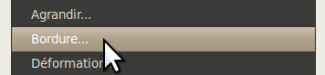
Vous voulez faire un zouli cadre autour d’une photo ? Cette fonction permet d’évider une sélection pour n’en garder qu’une bordure de l’épaisseur choisie !
Voici quelques exemples de résultats :
Les plus attentifs remarqueront que les bords courbes ou obliques sont crénelés. C’est un défaut de cette fonction et donc pour cette raison, je vous conseille de limiter son utilisation aux sélections rectangulaires ou ne comportant que des coins droits.
Déformation
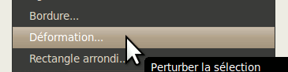
Cette fonction permet de déformer une sélection. Suivant les paramètres cela peut donner soit un simple contour irrégulier, soit une forme qui rappelle carrément une éclaboussure.
Voici quelques exemples de paramètres avec les résultats, pour une même sélection.
En utilisant la fonction Adoucir juste après cette manipulation, ça vous permet de donner un effet de bord doux irrégulier comme ceux que l’on peut voir sur la couverture de certains bouquins fantastiques, ou sur certaines affiches de films.
Astuce bonus #1 : Sélectionner avec précision grâce aux guides
Vous devez vous demander comment faire en sorte que les bords d’une sélection rectangulaire ou elliptique soient placées de façon précise ? Je vais vous montrer un truc que tout graphiste soucieux du travail bien fait doit savoir.
Dans Gimp, tout comme dans d’autres éditeurs d’image aussi poussés, il existe ce qu’on appelle les guides. Ce sont des lignes horizontales ou verticales que l’on utilise sur notre image ouverte pour placer avec précision un calque, une sélection ou même un point de peinture. On peut les déplacer à volonté.
Euh mais j’en veux pas sur mon image finale !
Ne vous inquiétez pas, ces lignes n’apparaîtront QUE si l’image est ouverte sous Gimp, et à l’enregistrement, elles seront supprimées sauf si vous choisissez le format XCF ou PSD, qui conservent tous les deux les guides.
Et comment je fais pour utiliser ça ?
C’est assez simple ! Tout d’abord, vous vous rappelez que je vous avais brièvement parlé des deux règles qui se trouvent en haut et à gauche de l’image lors du survol de l’interface d’une fenêtre d’image ouverte dans le chapitre Interface et personnalisation ? Et bien, c’est à partir de ces règles que l’on fait apparaître des guides !
Maintenant, placez votre souris sur la règle du haut pour un guide horizontal, ou sur la règle de gauche pour un guide vertical, puis en maintenant le bouton de la souris enfoncé, déplacez votre souris jusqu’à votre canevas.
Vous verrez alors une ligne suivre votre souris ! Une fois que vous relâcherez votre bouton, votre guide est placé, mais vous pouvez continuer à le déplacer en utilisant l’outil de déplacement (
) et en tenant votre souris suffisamment proche pour que le guide devienne rouge (surbrillance).
Vous pouvez bien sûr zoomer pour placer votre guide avec précision.
Et maintenant, si je veux en enlever un ?
Vous n’avez qu’à déplacer votre guide en dehors du canevas pour le supprimer. ;) Ou encore si vous voulez tous les enlever, allez dans Image > Guides > Enlever tous les guides.
Maintenant, question de s’exercer un petit peu, placez deux guider horizontaux et deux guides verticaux aux endroits où vous voulez délimiter votre sélection rectangulaire ou elliptique.
Un exemple avec le mien :
Maintenant, faites une sélection rectangulaire ou elliptique en partant très près d’un coin pour aller jusqu’à son opposé, puis ajustez ensuite les bords qui en ont besoin. C’est là que vous pouvez constater la magie des guides puisque ceux-ci ont un effet magnétique sur votre souris et donc votre sélection peut se faire de façon précise !
Pour mieux voir encore, remplissez votre sélection et désactivez-la !
Je parie que bien vite, vous ne pourrez plus vous en passer ! :p
Astuce bonus #2 : Récupérer la forme d’une sélection depuis un calque
L’un des avantages de travailler avec les calques, c’est qu’en ayant les composantes séparées, vous pouvez récupérer la forme de la sélection d’un calque précis à partir de son alpha (il faut donc que le calque soit transparent). Cela est particulièrement pratique lorsque vous travaillez sur une série de boutons et que vous devez utiliser plusieurs fois la même sélection qui a servi pour la forme du bouton, que ce soit pour créer une variante d’une autre couleur ou pour créer un calque d’assombrissement ou d’éclaircissement.
Pour récupérer la forme, rien de plus simple : Depuis votre fenêtre ou onglet des calques (Ctrl+L), vous faites un clic-droit sur le calque dont vous voulez récupérer la forme, puis vous allez dans Alpha vers Sélection.
Cela vous permet par exemple de faire à la fois une ombre portée et un reflet en partant de la même base d’un bouton, comme dans cet exemple :
Astuce bonus #3 : Sauvegarder une sélection dans un canal, et la modifier
Il peut arriver que vous ayez à sauvegarder une sélection d’une forme particulière sans avoir la possibilité de pouvoir récupérer la forme exacte avec l’astuce précédente, ou encore que vous ayez à modifier une sélection à l’aide d’outils ou de filtres. Pour cela, partez d’une sélection dont je vous laisse la liberté sur sa forme. Dans mon cas, je pars d’une sélection rectangulaire que j’aurai déformée.
Vous allez dans Édition > Enregistrer dans un canal.
Une fenêtre comme ceci s’ouvrira. Ne vous préoccupez pas des couches de rouge, vert et bleu. Occupez-vous seulement du votre masque de sélection qui s’est créée à partir de la sélection que vous avez sauvegardée.
Le principe de fonctionnement est très similaire à celui des masques de calque : le noir détermine les zones non sélectionnées, et le blanc détermine les zones sélectionnées. Vous pouvez donc peindre et utiliser les filtres et les outils de couleur pour modifier ce masque.
Mais pour pouvoir travailler dessus, il faut l’activer. Pour cela, cliquez sur la première case vis-à-vis votre masque pour faire apparaître l’œil.
À partir de là, vous pouvez désactiver votre sélection pour ensuite pouvoir travailler à volonté sur votre masque. :)
Voilà d’ailleurs un exemple où j’ai utilisé un flou gaussien (Filtres > Flou > Flou gaussien) de 15 pixels.
Maintenant, lorsque vous aurez à récupérer la forme de la sélection du masque, vous n’avez qu’à soit faire clic-droit sur le masque > Canal vers Sélection ou à simplement cliquer sur l’avant-dernier icône en bas de la fenêtre des canaux.
Et voilà, vous avez votre sélection prête à utiliser, mais avant de remplir ou peindre, assurez-vous de re-sélectionner votre calque dans la fenêtre des calques, car sinon, vous remplirez le masque à la place !
J’ai préféré faire une sous-partie distincte pour vous montrer le fonctionnement d’une fonctionnalité qui combine trois fonctions et qui permet de créer facilement des sélections personnalisées et qui peut être utilisée pour le détourage : le masque rapide.
Pour la démonstration, j’ai été inspirée par le fait qu’au moment d’écrire ces lignes, soit la veille de Pâques, nous avions il y a quelques jours la visite d’une colonie de bruants des neiges qui s’étaient arrêtés à nos mangeoires pour se gaver avant de continuer leur migration vers la toundra canadienne où ils nichent l’été.
Donc en faisant une recherche sur Flickr, j’ai trouvé cette photo qui est sous licence CC-BY.
Nous allons donc utiliser le masque rapide pour détourer l’oiseau de la photo.
Enregistrez la photo puis ouvrez-la sous Gimp.
Tout d’abord, on doit recadrer la photo pour enlever les parties inutiles de la photo. Prenez l’outil de recadrage (
) et faites votre rectangle qui doit contenir l’oiseau entier.
Cliquez ensuite au centre du rectangle pour confirmer l’opération. La partie restante étant petite, zoomez votre image à 200% et ajustez la taille de la fenêtre (Affichage > Ajuster la fenêtre à l’image).
Maintenant, ajoutez un canal alpha (Calque > Ajouter un canal alpha), afin qu’on ait un fond transparent et non un fond blanc lorsqu’on effacera le paysage autour de l’oiseau.
Maintenant, nous sommes prêts au détourage ! Allez dans Sélection > (Dés)activer le masque rapide ou faites Maj+Q.
Votre image se couvrira de rouge.
Le principe est très similaire à celui des masques de calque que nous avons vus dans le chapitre précédent, et aux masques de sélection (canaux) : tout se passe avec le noir et le blanc, donc assurez-vous d’avoir ces deux couleurs en PP et AP. Sinon, réinitialisez-les avec les mini-carrés (
).
Ensuite, notre masque rapide est pour le moment entièrement « noir », car il n’y a pour le moment rien de sélectionné. Pour sélectionner ce qu’on veut, soit le paysage autour de l’oiseau, on doit peindre avec du blanc.
Intervertissez donc vos deux couleurs avec (
) et prenez l’outil Pinceau (
). Commencez à peindre autour de l’oiseau, en commençant avec une brosse assez grosse pour faire une ébauche du travail.
Rapetissez votre pinceau à mesure que vous vous approchez du contour de l’oiseau.
Au secours, j’ai débordé sur le pit-pit !
Si ça vous arrive, pas de panique ! On peut corriger ça tout simplement en peignant sur la bavure avec du noir !
Continuez ensuite le travail jusqu’à ce que le travail soit satisfaisant. N’hésitez pas à zoomer pour la finition.
Une fois prêt, allez tout simplement dans Sélection > (Dés)activer le masque rapide ou faites Maj+Q pour désactiver le masque.
Vous avez maintenant votre sélection !
Si jamais vous remarquez des trous dans votre sélection, réactivez tout simplement le masque rapide pour faire la correction.
Une fois le masque désactivé et la sélection satisfaisante, faites tout simplement Édition > Effacer, ou appuyez sur Suppr pour effacer la sélection (le paysage).
Là encore, si vous voyez quelques pixels qui traînent en dehors de l’oiseau, annulez l’effacement et réactivez le masque rapide pour corriger.
Voici enfin notre bruant des neiges détouré !
Il ne resterait qu’à retoucher la luminosité et le contraste pour rendre l’oiseau plus clair.
On en vient maintenant à un exercice d’échauffement pour voir si vous avez bien assimilé le principe des calques et des manipulations des sélections, avant d’attaquer le premier vrai TP du cours.
L’exercice
Pour des raisons utilitaires, je ne prévoyais pas du tout en venir à vous proposer une boule Aqua comme exercice, mais je me suis rendue compte que même si ce type de graphique ne s’utilise pas dans n’importe quel travail, je dois reconnaître que les boules Aqua demandent diverses manipulations des calques et des sélections, choses que vous venez tout juste d’apprendre et qui doit être mis en pratique.
Il existe de nombreuses variations possibles de boules Aqua, mais pour cet exercice, on va y aller avec ma propre variante que je viens d’improviser exprès pour l’exercice, que voici :
Contrairement à ce que les plus débutants d’entre vous pourriez penser, seules trois couleurs ont été utilisées pour réaliser cette boule : noir, blanc, et une couleur de la teinte choisie (ex : rouge).
Mais alors pourquoi j’ai des rouges foncés et des rouges plus pâles, et un gris ?
C’est justement là l’intérêt d’un exercice de ce genre : vous amener à apprendre à jouer avec le blanc et le noir ainsi qu’avec les modes de calques, pour éclaircir ou assombrir une couleur. ce qui s’avère beaucoup plus pratique que d’utiliser des variations d’une couleur, puisque vous n’aurez qu’un calque à modifier si vous voulez changer la couleur ! C’est ce qu’on appelle « penser réutilisable » !
Ce que vous aurez besoin
Pour l’exercice, vous aurez besoin des notions suivantes :
Créer et manipuler les calques (changer son mode, régler l’opacité, etc.) ;
Utiliser les sélections et leurs options ;
Manipuler les sélections et récupérer la forme d’une sélection ;
Utiliser les guides, pour un positionnement plus précis ;
Utiliser les dégradés.
Vous aurez aussi besoin de créer une nouvelle image de 400*450 avec le remplissage blanc (ce calque pourra être désactivé). Placez des guides verticaux à 40, 200 et 360, et des guides horizontaux à 40, 160, 200 et 360, comme ceci :
Maintenant, si vous voulez utiliser le même rouge que moi, voici son code hexa : #b00000
Ce que vous devez faire
Puisque l’exercice vise à consolider vos notions apprises au sujet des calques et des sélections, il vous faudra pour réaliser cette boule Aqua utiliser le moins de calques possible, le minimum étant 5, en excluant le calque blanc auquel vous ne devez pas toucher. Comme couleurs vous ne devrez utiliser que le blanc pur, le noir pur et une teinte choisie (ex: rouge).
Réfléchissez donc bien aux manipulations à faire pour reproduire ma boule le plus fidèlement possible en respectant ces critères. Il se peut que vous n’y arriviez pas du premier coup et c’est normal, car vous n’avez pas encore l’œil d’un graphiste expérimenté, mais ceci viendra avec la pratique.
Correction
Vous avez fini ? Voici la correction :
Calque « Fond »
Ceci ne devrait pas être dur à deviner. En suivant les repères, vous pouvez facilement centrer votre sélection elliptique comme ceci :
Peut-être avez-vous fait une sélection normale en partant d’un coin à l’autre, mais saviez-vous que vous pouvez faire la même chose en utilisant l’option Étendre depuis le centre et en utilisant l’intersection (200,200) des guides ? Pensez-y lorsque vous devez centrer une ellipse ou un rectangle ! C’est plus pratique et moins casse-tête !
Ensuite, il ne vous reste qu’à remplir avec la teinte choisie.
Calque « Lueur »
Avez-vous gardé votre sélection ? Si non, récupérez-la avec un Alpha vers Sélection sur le calque « Fond ». Ensuite, pour avoir ce cercle plus petit avec les bords flous, vous devez avant tout réduire votre sélection de 30 pixels (Sélection > Réduire, puis l’adoucir de 50 pixels (Sélection > Adoucir).
Il ne vous reste qu’à remplir avec votre blanc :
Pour le moment, c’est blanc tapant, mais c’est là que vous aurez besoin des modes de calque ! Réglez-le pour que ça ne fasse qu’éclaircir la teinte, sans la délaver. En général, Superposer fait l’affaire.
Calque « Reflet »
C’est là que le deuxième guide horizontal, situé à 160, devient utile ! Cette fois, pour faire le reflet, il devient essentiel d’utiliser l’option Étendre depuis le centre pour vous éviter bien des maux de tête !
Maintenant, est-ce que vous vous rappelez du passage dans la partie de dégradés du chapitre Peindre, remplir, tracer où je vous parlais d’un dégradé PP vers transparent ? En gros, vous avez besoin de sélectionner ce dégradé dans la fenêtre des dégradés pour réaliser ce dégradé blanc vers transparent. Une fois cela sélectionné, vous faites votre trait de haut en bas avec la touche Ctrl enfoncée. Les deux bouts doivent être à quelques pixels du bord, à l’intérieur de la sélection.
Vous pouvez ensuite abaisser légèrement l’opacité du calque, à 80% par exemple.
Calque « Finition »
Quelque chose me dit que vous serez nombreux à ne pas y arriver, soit parce que vous l’aurez zappé, soit parce que vous n’y serez pas arrivés. Cette partie est la moins évidente.
Quand on fait une boule Aqua, je trouve qu’un léger effet comme celui que je vous montre donne un aspect plus « fini » à la boule, et lui donne un effet moins « plat ».
Pour le faire, vous commencez par récupérer la forme de la sélection du calque « Fond » avant de créer votre calque. Remplissez-le immédiatement d’une couleur noire.
Maintenant, on veut l’évider, mais on ne veut pas un bord interne dur. Pour cela, réduisez votre sélection de 2 pixels (Sélection > Réduire), puis adoucissez-la de 10 pixels (Sélection > Adoucir) avant d’effacer (Suppr).
En passant ce calque en mode Superposer, on obtient un bel assombrissement, pas trop fort.
Vous voyez, c’était pas si compliqué que ça ! :p
Calque « Ombre »
Celle-là aussi n’est peut-être pas évidente, mais ce n’est pas très compliqué. En utilisant l’option Étendre depuis le centre et l’intersection (200,360) des guides, faites votre sélection légèrement plus étroite que la boule.
Adoucissez-la ensuite de 50 pixels, soit avec l’option Adoucir les bords, soit avec Sélection > Adoucir. Remplissez ensuite de noir.
En baissant l’opacité à 50%, on obtient un plus bel effet.
Et voilà, je vous l’avais dit que ça ne m’a pris que 5 calques + le calque blanc pour réaliser la boule Aqua !
Si vous ne l’avez pas eu du premier coup, n’hésitez pas à refaire l’exercice avant de passer au premier TP qui sera bien plus complexe que notre boule.
En n’ayant qu’un seul calque qui utilise la teinte choisie, vous pourrez à loisir changer la couleur de votre boule en créant simplement un nouveau calque « Fond » et en utilisant la forme de la sélection du fond de la boule, pour ainsi faire des variantes comme celles-ci :
Couleurs utilisées : #005ae1, #008a00, #4b4b4b, #9700b7 et #b75f00.
Après ces échauffements, vous êtes maintenant prêts pour votre premier vrai TP !
Cette partie est loin d’être finie ! D’autres chapitres s’ajouteront par la suite, donc restez à l’affût de l’arrivée de nouveaux chapitres !
Vous êtes en train de suivre un tuto en anglais, mais votre Gimp est en français ? Vous cherchez des tutos ou des communautés spécialisés ?
Ce chapitre se veut un condensé d’information afin d’y placer les infos que je ne pouvais pas vraiment caser ailleurs, mais qui vous seront potentiellement utiles.
Vous suivez un tuto en anglais, mais vous vous demandez qu'est-ce que c’est que « feather by 10px » ou « Put this layer in Dodge mode » ? Ce listing vous donne les équivalences français-anglais afin de vous faciliter la lecture des tutos anglophones.
Les modes de calques
Français
Anglais
Normal
Normal
Dissoudre
Dissolve
Multiplier
Multiply
Diviser
Divide
Écran
Screen
Superposer
Overlay
Éclaircir
Dodge
Assombrir
Burn
Lumière dure
Hard light
Lumiière douce
Soft light
Extraction de grain
Grain extract
Fusion de grain
Grain merge
Différence
Difference
Addition
Addition
Soustrait
Substract
Assombrir seulement
Darken only
Éclaircir seulement
Lighten only
Teinte
Hue
Saturation
Saturation
Couleur
Color
Valeur
Value
Boîte à outils
Français
Anglais
Outil de sélection rectangulaire
Rectangle select tool
Outil de sélection elliptique
Ellipse select tool
Outil de sélection à main levée
Free select tool
Outil de sélection contiguë
Fuzzy select tool
Outil de sélection par couleur
Select by color tool
Outil ciseaux intelligents
Scissors select tool
Outil d’extraction de premier-plan
Foreground select tool
Outil chemins
Path Tool
Outil pipette à couleurs
Color Picker tool
Outil de zoom
Zoom Tool
Outil de mesure
Measure tool
Outil de déplacement
Move tool
Outil d’alignement
Alignment tool
Outil de découpage
Crop tool
Outil de rotation
Rotate tool
Outil de mise à l’échelle
Scale tool
Outil de cisaillement
Shear tool
Outil perspective
Perspective tool
Outil de retournement
Flip tool
Outil texte
Text tool
Outil de remplissage
Bucket fill tool
Outil dégradé
Blend tool
Outil crayon
Pencil tool
Outil pinceau
Paintbrush tool
Outil gomme
Eraser tool
Outil aérographe
Airbrush tool
Outil de calligraphie
Ink tool
Outil de clonage
Clone tool
Outil correcteur
Healing tool
Outil de clonage en perspective
Perspective Clone tool
Outil de flou et de netteté
Blur/Sharpen tool
Outil de barbouillage
Smudge tool
Outil d'éclaircissement et d'assombrissement
Dodge/Burn tool
Options des outils
Français
Anglais
Mode Remplace la sélection courante Ajouter à la sélection courante Soustraire de la sélection courante Intersection avec la sélection courante
Mode Replace the current selection Add to the current selection Substract from the current selection Intersect with the current selection
Lissage
Antialiasing
Adoucir les bords
Feather edges
Coins arrondis
Rounded corners
Rayon
Radius
Étendre depuis le centre
Expand from center
Fixé Proportions Largeur Hauteur Taille
Portrait Paysage
Position
Fixed Aspect ratio Width Height Size
Portrait Landscape
Position
Mise en évidence
Highlight
Aucun guide Lignes du centre Règle des tiers Sections d’or
No guides Center lines Rule of thirds Golden sections
Réduction automatique
Auto shrink
Réduction fusionnée
Shrink merged
Sélectionne des régions transparentes
Select transparent areas
Échantillonner sur tous les calques
Sample merged
Seuil
Treshold
Sélectionner par Composite Rouge Vert Bleu Teinte Saturation Valeur
Select by Composite Red Green Blue Hue Saturation Value
Contour interactif
Interactive boundary
Contiguë
Contiguous
Affinage interactif Marquer le premier-plan Marquer l’arrière-plan
Petite brosse Grande brosse
Interactive refinement Mark foreground Mark background
Small brush Large brush
Lissage
Smoothing
Couleur d’aperçu Rouge Vert Bleu
Preview color Red Green Blue
Sensibilité à la couleur
Color Sensitivity
Mode d’édition Tracer Édition Déplacement
Edit Mode Design Edit Move
Polygonal
Polygonal
Sélection depuis le chemin
Selection from Path
Tracer le chemin
Stroke Path
Moyenne du voisinage
Sample average
Mode de prélèvement Pointer seulement Définir la couleur de premier-plan Définir la couleur d'arrière-plan Ajouter à la palette
Pick Mode Pick only Set foreground color Set background color Add to palette
Utiliser la fenêtre d’informations
Use info window
Auto-redimensionner la fenêtre
Auto-resize window
Basculer l’outil Zoom avant Zoom arrière
Tool Toggle Zoom in Zoom out
Déplacer Calque Sélection Chemin
Move Layer Selection Path
Basculer l’outil Pointer un calque et ou guide Déplacer le calque actif
Tool Toggle Pick a layer or guide Pick the active layer
Alignement
Align
Relatif à Premier élément Image Sélection Calque actif Canal actif Chemin actif
Relative to First item Image Selection Active layer Active channel Active path
Aligner le bord gauche de la cible Aligner le centre de la cible Aligner le bord droit de la cible Aligner le bord supérieur de la cible Aligner le fentre de la cible Aligner le bord inférieur de la cible
Align left edge of target Align center of target Align right edge of target Align top edge of target Align middle of target Align bottom edge of target
Répartition Répartir à gauche les bords des cibles Répartir horizontalement les centres des cibles Répartir à droite les bords des cibles Répartir en haut les bords des cibles Répartir verticalement les centres des cibles Répartir en bas les cibles
Distribute Distribute left edges of targets Distribute horizontal centers of target Distribute right edges of targets Distribute top edges of target Distribute vertical centers of targets Distribute bottoms of targets
Décalage
Offset
Calque actuel seulement
Current layer only
Autoriser l’agrandissement
Allow growing
Transformer
Transform
Direction Normale (en avant) Corrective (en arrière)
Direction Normal (forward) Corrective (backward)
Type d’interpolation Aucune Linéaire Cubique Sinc (Lanczos3)
Interpolation None Linear Cubic Sinc (Lanczos3)
Rognage Ajuster Rogner Rogner suivant le résultat Rogner selon le même rapport
Clipping Adjust Clip Crop to result Crop with aspect
Aperçu Contour Grille Image Image + Grille
Opacité
Nombre de lignes de grille Espacement des lignes de la grille
Justification Aligné à gauche Aligné à droite Centré Justifié
Justify Left justified Right justified Centered Filled
Texte le long d'un chemin
Texte along Path
Créer un chemin depuis le texte
Path from Text
Mode Normal Dissoudre Derrière Effacer la couleur Multiplier Diviser Écran Superposer Éclaircir Assombrir Lumière dure Lumière douce Extraction de grain Fusion de grain Différence Addition Soustrait Assombrir seulement Éclaircir seulement Teinte Saturation Couleur Valeur
Mode Normal Dissolve Behind Color erase Multiply Divide Screen Overlay Dodge Burn Hard light Soft light Grain extract Grain merge Difference Addition Substract Darken only Lighten only Hue Saturation Color Value
Opacité
Opacity
Type de remplissage Remplissage avec la couleur de PP Remplissage avec la couleur d’AP Remplissage avec le motif
Fill Type FG color fill BG color fill Pattern fill
Région affectée Remplir toute la sélection Remplir des couleurs similaires
Affected Area Fill whole selection Fill similar colors
Recherche de couleurs similaires Remplir les régions transparentes Échantillonner sur tous les calques
Finding Similar Colors Fill transparent areas Sample merged
Remplir via
Fill by
Dégradé
Gradient
Décalage
Offset
Forme Linéaire Bilinéaire Radial Carré Conique (symétrique) Conique (asymétrique) Suivant la forme (angulaire) Suivant la forme (sphérique) Suivant la forme (excroissance) Spirale (sens horaire) Spirale (sens anti-horaire)
Dynamique de la brosse Opacité Dureté Taux Taille Couleur
Pression Vitesse Aléatoire
Brush Dynamics Opacity Hardness Rate Size Color
Pressure Velocity Random
Estomper Longueur
Fade out Lenght
Appliquer fluctuation Quantité
Apply Jitter Amount
Contour dur
Hard edge
Incrémentiel
Incremental
Couleur à partir du dégradé
Use color from gradient
Anti-effacement
Anti erase
Taux Pression
Rate Pressure
Ajustement Taille Angle
Adjustment Size Angle
Sensibilité Taille Inclinaison Vitesse
Sensitivity Size Tilt Speed
Type Forme
Type Shape
Source Image Motif
Source Image Pattern
Alignement Aucun Aligné Enregistré Fixé
Alignment None Aligned Registered Fixed
Modifie le plan de perspective Clonage en perspective
Modify Perspective Perspective Clone
Type de convolution Flou Augmenter la netteté
Convolve Type Blur Sharpen
Type Éclaircir Assombrir
Type Dodge Burn
Intervalle Tons sombres Demi-teintes Tons clairs
Range Shadows Midtones Highlights
Exposition
Exposure
Menu de la fenêtre centrale
Français
Anglais
Nouvelle image
New
Créer Depuis le presse-papier Capture d’écran Boutons Logos Motifs Thèmes de pages Web
Create From Clipboard Screenshot Buttons Logos Patterns Web Page Themes
Ouvrir
Open
Ouvrir en tant que calques
Open as Layers
Ouvrir suivant l’emplacement
Open Location
Récemment ouverts
Open Recent
Enregistrer
Save
Enregistrer sous
Save As
Enregistrer une copie
Save a Copy
Enregistrer comme modèle
Save as Template
Rétablir
Revert
Envoyer par courriel
Send by Email
Imprimer
Print
Mise en page
Page Setup
Fermer
Close
Fermer tout
Close All
Quitter
Quit
Français
Anglais
Annuler
Undo
Rétablir
Redo
Fondu
Fade
Historique d’annulation
Undo History
Couper
Cut
Copier
Copy
Copier visible
Copy visible
Coller
Paste
Coller dans
Paste into
Coller comme Nouvelle image Nouveau calque Nouveau motif Nouvelle brosse
Paste As New Image New Layer New Pattern New Brush
Presse-papier Couper (nommé) Copier (nommé) Copier visible nommé Coller (nommé)
Buffer Cut Named Copy Named Copy Vislble Named Paste Named
Effacer
Clear
Remplir avec la couleur de PP
Fill with FG Color
Remplir avec la couleur d’AP
Fill with BG Color
Remplir avec le motif
Fill with Pattern
Tracer la sélection
Stroke Selection
Tracer le chemin
Stroke Path
Préférences
Preferences
Raccourcis-clavier
Keyboard Shortcuts
Modules
Modules
Unités
Units
Français
Anglais
Tout
All
Aucune
None
Inverser
Invert
Flottante
Float
Par couleur
By Color
Depuis le chemin
From Path
Éditeur de sélection
Selection Editor
Adoucir
Feather
Enlever l’adoucissement
Sharpen
Réduire
Shrink
Agrandir
Grow
Bordure
Border
Perturbation
Distort
Rectangle arrondi
Rounded Rectangle
(Dés)activer le masque rapide
Toggle Quick Mask
Enregistrer dans un canal
Save to Channel
Vers chemin
To Path
Français
Anglais
Nouvelle vue
New View
Point pour point
Dot for Dot
Zoom Zoom précédent Zoom arrière Zoom avant Ajuster l’image dans la fenêtre Ajuster à la fenêtre Autres
Zoom Revert Zoom Zoom Out Zoom In Fit Image in Window Fill Window Other
Ajuster la fenêtre à l’image
Shrink Wrap
Plein écran
Fullscreen
Fenêtre de navigation
Navigation Window
Filtres d’affichage
Display Filters
Afficher la sélection
Show Selection
Afficher les bords du calque
Show Layer Boundary
Afficher les guides
Show Guides
Afficher la grille
Show Grid
Afficher les points d’échantillonnage
Show Sample Points
Aligner sur les guides
Snap to Guides
Aligner sur la grille
Snap to Grid
Aligner sur les bords du canevas
Snap to Canvas Edges
Aligner sur le chemin actif
Snap to Active Path
Couleur de remplissage Depuis le thème Couleur claire du damier Couleur sombre du damier Sélectionner une couleur personnalisée Comme dans les préférences
Padding Color From Theme Light Check Color Dark Check Color Select Custom Color As in Preferences
Afficher la barre de menu
Show Menubar
Afficher les règles
Show Rulers
Afficher les barres de défilement
Show Scrollbars
Afficher la barre d’état
Show Statusbar
Français
Anglais
Dupliquer
Duplicate
Mode< RVB Niveaux de gris Couleurs indexées Assigner un profil de couleurs Convertir en un profil de couleurs
Mode RGB Grayscale Indexed Assign Color Profile Convert to Color Profile
Transformer Miroir horizontal Miroir vertical Rotation 90° sens horaire Rotation 90° sens anti-horaire Rotation 180° Massicot
Guides Enlever tous les guides Nouveau guide (en pourcentage) Nouveau guide Nouveau guide depuis la sélection
Guides Remove All Guides New Guide (by Percent) New Guide New Guides from Selection
Configurer la grille
Configure Grid
Propriétés de l’image
Image Properties
Français
Anglais
Nouveau calque
New Layer
Nouveau depuis le visible
New from Visible
Dupliquer le calque
Duplicate Layer
Ancrer le calque
Anchor Layer
Fusionner vers le bas
Merge Down
Supprimer le calque
Delete Layer
Pile Sélectionner le calque précédent Sélectionner le calque suivant Sélectionner le calque du haut Sélectionner le calque du bas Remonter le calque Descendre le calque Calque tout en haut Calque tout en bas Inverser l’ordre des calques
Stack Select Previous Layer Select Next Layer Select Top Layer Select Bottom Layer Raise Layer Lower Layer Layer to Top Layer to Bottom Reverse Layer Order
Masque Ajouter un masque de calque Appliquer le masque de calque Supprimer le masque de calque Afficher le masque de calque Modifier le masque de calque Désactiver le masque de calque Masque vers sélection Ajouter à la sélection Soustraire de la sélection Intersection avec la sélection
Mask Add Layer Mask Apply Layer Mask Delete Layer Mask Show Layer Mask Edit Layer Mask Disable Layer Mask Mask to Selection Add to Selection Substract from Selection Intersect with Selection
Transparence Ajouter un canal alpha Supprimer le canal alpha Aplatir à moitié Couleur vers alpha Seuil alpha Alpha vers sélection Ajouter à la sélection Soustraire de la sélection Intersection avec la sélection
Transparency Add Alpha Channel Remove Alpha Channel Color to Alpha Semi-Flatten Treshold Alpha Alpha to Selection Add to Selection Substract from Selection Intersect with Selection
Transformer Miroir horizontal Miroir vertical Rotation 90° sens horaire Rotation 90° sens anti-horaire Rotation 180° Rotation arbitraire Décalage
Mappage Définir la palette Réorganiser la palette des couleurs Application de dégradé Application de palette Colorier à partir d’un échantillon Échanger deux couleurs Psychédélique Rotation des couleurs
Map Set Colormap Rearrange Colormap Gradient Map Palette Map Sample Colorize Color Exchange Alien Map Rotate Colors
Informations Histogramme Analyse colorimétrique Moyenne du bord Palette lissée
Info Histogram Colorcube Analysis Border Average Smooth Palette
Coloriser
Colorify
Couleur vers alpha
Color to Alpha
Maximum RVB
Maximum RGB
Ôter les « pixels chauds »
Hot
Collection de filtres
Filter Pack
Retinex
Retinex
Français
Anglais
Outils de sélection Sélection rectangulaire Sélection elliptique Sélection à main levée Extraction de premier-plan Sélection contiguë Sélection par couleur Ciseaux intelligents
Selection Tools Rectangle Select Ellipse Select Free Select Foreground Select Fuzzy Select By Color Select Intelligent Scissors
Distorsions Change une colonne ou rangée sur deux Coin de page Coordonnées polaires Courber Déformation interactive Déplacer Distorsion de lentille Fenêtre avec stores Gravure Mosaïque Onduler Propagation de valeur Relief Tourner et aspirer Trame d’imprimerie Vagues Vent Vidéo
Distort Erase Every Other Row* Pagecurl Polar Coordinates Curve Bend IWarp Shift Lens Distortion Blinds Engrave Mosaic Ripple Value Propagate Emboss Whirl and Pinch Newsprint Waves Wind Vidwo
Ombres et lumières Éblouissement graduel Effet d’éblouissement Effets d’éclairage Étinceler Supernova Effet Xach Ombre en perspectie Ombre portée Carreaux de verre Lentille optique
Light and Shadow Gradient Flare Lens Flare Lighting Effects Sparkle Supernova Xach Effect Perspective Drop Shadow Glass Tile Apply Lens
Décor Ajouter un biseau Ajouter une bordure Bordure inégale Coins arrondis Patron de chromage Patron de gravure Pellicule photo Taches de café Vieille photo
Mappage Décaler Déplacer selon une carte Fractaliser Illusion Morceaux de papiers Petits raccords Plaquer sur un objet Raccorder Rendre raccordable Repoussage d’après une carte
Map Warp Displace Fractal Trace Illusion Paper Tile Small Tiles Map Object Tile Make Seamless Bumpmap
Rendu Nuages Brouillage uni Fog Nuages par différence Plasma
Alpha vers logo Basique II Basique I BD Biseau graduel Bovination Chaud rougeoyant Chrome Contour 3D Craie Gravure au burin Givré Glacé Lueur extérieure Mélangé Métallique froid Néon extérieur Néon Texturé Trace de particule
Alpha to Logo Basic II Basic I Comic Book Gradient Bevel Bovination Glowing Hot Chrome 3D Outline Chalk Chip Away Frosty Glossy Alien Glow Blended Cool Metal Alien Neon Neon Textured Particle Trace
Python-Fu Console
Python-Fu Console
Script-Fu Actualiser les scripts Console Démarrer le serveur
Script-Fu Refresh Scripts Console Start Server
Français
Anglais
Groupes de fenêtres récemment fermés
Recently Closed Docks
Fenêtres amcrables Options des outils État du périphérique Calques Canaux Chemins Palette des couleurs indexées Histogramme Éditeur de sélection Navigation Historique d’annulation Pointeur Points d’échantillonnage Couleurs Brosses Motifs Dégradés Palettes Polices Presse-papiers Images Historique des documents Modèles Outils Console d’erreurs
GIMP en-ligne Registre des greffons Site Web des développeurs Site Web du manuel utilisateur Site Web officiel
GIMP Online Plug-In Registry Developer Web Site User Manual Web Site Main Web Site
Manuel utilisateur Comment utiliser les boîtes de dialogue Concepts de base Créer, ouvrir et enregistrer des fichiers Dessiner des objets simples Préparer vos images pour le Web Travailler sur les photos numériques Utiliser les chemins
User Manual How to Use Dialogs Basic Concepts Create, Open and Save Files Drawing Simple Objects Preparing your images for the Web Working with Digital Camera Photos Using Paths
Vous cherchez des tutoriels ou des communautés de gimpeurs ? Je regroupe ici les liens de différents sites que je connais ou que j'ai trouvé sur le Web. Ce listing sera régulièrement mis à jour à mesure qu’on me propose d’autres sites ou que j’en découvre de nouveaux.
Site officiel francophone - ressources et liens. Note : l’ancien domaine était gimp-fr.org, mais il a changé pour gimpfr.org, donc faites attention à ne pas vous tromper !
La plus grande communauté francophone dédiée à GIMP. La plupart des genres sont abordés, mais la photographie et le peinture virtuelle sont les plus fréquents. Des ressources et des tutoriels (via le site-partenaire GA-Tuto) s’y trouvent également. Ne vous fiez pas à la page d'accueil qui n'est pas à jour, le forum est encore actif.
Communauté de support avec tutoriels et service de formation. Davantage spécialisé en techniques de signatures, mais certains membres pratiquent d’autres genres.
Communauté graphique spécialisée dans les effets « crystal » - Tutoriels et support pour plusieurs logiciels dont GIMP (certains ont été faits pour d'anciennes versions).
Des tutoriels pour différents niveaux, dont un tutoriel vidéo présentant l’interface de GIMP. Tous les articles sont sous licence GNU Free Documentaiton License.
Page Web regroupant différents sites de tutoriels et ressources Gimp et les communautés dédiées à Gimp ou au logiciel libre qui participent volontairement au webring.
Bien que ce site soit en principe fermé, son nom de domaine en .com étant expiré, vous pouvez quand même retrouver plusieurs tutos vidéos réalisés par l’auteur du site, ainsi que des tutoriels écrits réalisés par les membres. Ces tutoriels datent principalement des versions 2.4 et 2.6.
Communauté anglophone avec pleins de tutoriels classés par catégories. Ces tutoriels datent pour la plupart d’anciennes versions de Gimp, donc certaines choses peuvent différer avec votre version.
Des tutoriels portant autant sur les bases et outils que sur les filtres.
N’hésitez pas à mettre ce chapitre dans vos marque-pages pour pouvoir y revenir directement au besoin ! Et n’hésitez pas non plus à utiliser les commentaires pour proposer des sites qui ne sont pas présents dans le tableau listant les sites traitant de Gimp.
Nous vous remercions de l’attention que vous portez à notre tutoriel.
Merci à…
Monitrail, membre de Gimp-Attitude, pour son point de vue de débutante qui m’a permis d’améliorer le contenu du chapitre 2 sur la découverte de l’interface.
jpsan, membre de la communauté QuébecOS pour m’avoir aidée à compléter les infos sur l’ajout de ressources sous Linux, en rapport avec KDE.
Truthy, pour ses yeux de débutant qui m’ont permis de corriger certains points dans mes chapitres.
plovemax de Gimp Attitude et sydzero, pour leur coup de main sur l’ajout des ressources sous Mac OSX.
supersam2 de Gimp Attitude, pour l’ajout d’un détail sur l’utilisation du lasso à main levée et du lasso polygonal en même temps avec l’outil Sélection contiguë.
m@tteo78, pour les précisions qu’il a pu apporter sur certains points tout le long du tutoriel.
Ainsi que les autres lecteurs-testeurs dont je ne me souviens plus de leur nom, pour les retours d’erreurs et autres.
Et la suite ?
Après la refonte du cours, voici ce que je prévois faire :
Continuer la partie 2 sur les notions de base et commencer la partie 3 sur les notions plus avancées.
Faire la partie 4 qui devrait normalement être consacrée au webdesign et qui finira par un TP
Mettre le tuto complet à jour dès la sortie de Gimp 2.8, afin d'éviter l'obsolescence. (en cours)


{kind=link}
{kind=link}
{kind=link}
{kind=link}
{kind=link}
{kind=link}
{kind=link}
{kind=link}
{kind=link}
{kind=link}
{kind=link}
{kind=link}
{kind=link}
{kind=link}
{kind=link}
{kind=link}
{kind=link}
{kind=link}
{kind=link}
{kind=link}
{kind=link}
{kind=link}
{kind=link}
{kind=link}
{kind=link}
{kind=link}
{kind=link}
{kind=link}
{kind=link}
{kind=link}
{kind=link}
{kind=link}
{kind=link}
{kind=link}
{kind=link}
{kind=link}
{kind=link}
{kind=link}
{kind=link}
{kind=link}
{kind=link}
{kind=link}
{kind=link}
{kind=link}
{kind=link}
{kind=link}
{kind=link}
{kind=link}
{kind=link}
{kind=link}
{kind=link}
{kind=link}
{kind=link}
{kind=link}
{kind=link}
{kind=link}
{kind=link}
{kind=link}
{kind=link}
{kind=link}
{kind=link}
{kind=link}
{kind=link}
{kind=link}
{kind=link}
{kind=link}
{kind=link}
{kind=link}
{kind=link}
{kind=link}
{kind=link}
{kind=link}
{kind=link}
{kind=link}
{kind=link}
{kind=link}
{kind=link}
{kind=link}
{kind=link}
{kind=link}
{kind=link}
{kind=link}
{kind=link}
{kind=link}
{kind=link}
{kind=link}
{kind=link}
{kind=link}
{kind=link}
{kind=link}
{kind=link}
{kind=link}
{kind=link}
{kind=link}
{kind=link}
{kind=link}
{kind=link}
{kind=link}
{kind=link}
{kind=link}
{kind=link}
{kind=link}
{kind=link}
{kind=link}
{kind=link}
{kind=link}
{kind=link}
{kind=link}
{kind=link}
{kind=link}
{kind=link}
{kind=link}
{kind=link}
{kind=link}
{kind=link}
{kind=link}
{kind=link}
{kind=link}
{kind=link}
{kind=link}
{kind=link}
{kind=link}
{kind=link}
{kind=link}
{kind=link}
{kind=link}
{kind=link}
{kind=link}
{kind=link}
{kind=link}
{kind=link}
{kind=link}
{kind=link}
{kind=link}
{kind=link}
{kind=link}
{kind=link}
{kind=link}
{kind=link}
{kind=link}
{kind=link}
{kind=link}
{kind=link}
{kind=link}
{kind=link}
{kind=link}
{kind=link}
{kind=link}
{kind=link}
{kind=link}
{kind=link}
{kind=link}
{kind=link}
{kind=link}
{kind=link}
{kind=link}
{kind=link}
{kind=link}
{kind=link}
{kind=link}
{kind=link}
{kind=link}
{kind=link}
{kind=link}
{kind=link}
{kind=link}
{kind=link}
{kind=link}
{kind=link}
{kind=link}
{kind=link}
{kind=link}
{kind=link}
{kind=link}
{kind=link}
{kind=link}
{kind=link}
{kind=link}
{kind=link}
{kind=link}
{kind=link}
{kind=link}
{kind=link}
{kind=link}
{kind=link}
{kind=link}
{kind=link}
{kind=link}
{kind=link}
{kind=link}
{kind=link}
{kind=link}
{kind=link}
{kind=link}
{kind=link}